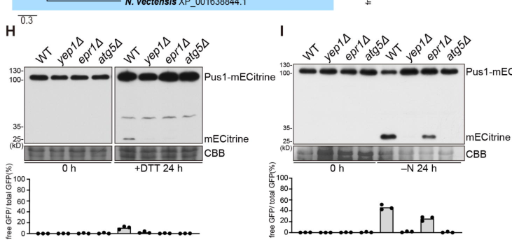

Autophagy protein 5 (Atg5) is a core component of the autophagy machinery in S. pombe. It forms a covalent conjugate with Atg12 through a ubiquitin-like conjugation system (involving Atg7 as E1-like enzyme and Atg10 as E2-like enzyme). The Atg12-Atg5 conjugate further associates with Atg16 to form the Atg12-Atg5-Atg16 complex, which functions as an E3-like ligase to promote lipidation of Atg8 with phosphatidylethanolamine (PE), a modification essential for autophagosome membrane formation. Atg5 localizes to the phagophore assembly site (PAS) through interactions with Atg18a. The gene is essential for macroautophagy, mitophagy, reticulophagy, and related selective autophagy pathways. The synonym mug77 (meiotically up-regulated gene 77) reflects transcriptional upregulation during meiosis, but autophagy itself is the core function of this protein.
| GO Term | Evidence | Action | Reason |
|---|---|---|---|
|
GO:0000045
autophagosome assembly
|
IBA
GO_REF:0000033 |
ACCEPT |
Summary: Atg5 is essential for autophagosome assembly as part of the Atg12-Atg5-Atg16 complex. This complex functions as an E3-like ligase promoting Atg8 lipidation, which is required for autophagosome membrane expansion. The IBA annotation is well-supported by phylogenetic inference from characterized orthologs and direct experimental evidence in S. pombe.
Reason: Core function of Atg5. The deep research confirms that the Atg12-Atg5-Atg16 complex "functions at the pre-autophagosomal structure to promote the lipidation of ATG8... a modification essential for autophagosome membrane dynamics and substrate recruitment." Direct experimental evidence in S. pombe from PMID:23950735 and PMID:19778961 supports the essential role in autophagosome formation.
Supporting Evidence:
PMID:23950735
We have shown that in S. pombe, Atg5 mainly exists in the form of Atg12–Atg5 conjugate, and physically interacts with Atg16
PMID:19778961
processing of GFP-tagged Atg8 can serve as a marker for autophagy in the fission yeast Schizosaccharomyces pombe
file:SCHPO/atg5/atg5-deep-research-falcon.md
places Atg5 mechanistically in the **phagophore expansion/maturation** stage of autophagosome biogenesis because Atg8–PE is a major determinant of autophagic membrane dynamics and cargo recruitment
|
|
GO:0034045
phagophore assembly site membrane
|
IBA
GO_REF:0000033 |
ACCEPT |
Summary: Atg5 localizes to the phagophore assembly site (PAS) membrane where it functions as part of the Atg12-Atg5-Atg16 complex. This localization is dependent on Atg18a which recruits the complex to PI3P-enriched membranes.
Reason: Localization to PAS membrane is directly demonstrated in S. pombe by fluorescence microscopy studies. The IBA annotation is consistent with direct IDA evidence (PMID:23950735, PMID:31941401) showing PAS localization.
Supporting Evidence:
PMID:23950735
atg18aΔ blocked the recruitment of Atg5 and Atg16 to PAS
file:SCHPO/atg5/atg5-deep-research-falcon.md
Atg16 is reported to promote PAS localization of Atg12–Atg5, and Atg18a is reported to target the Atg12–Atg5·Atg16 complex to the PAS
|
|
GO:0000423
mitophagy
|
IBA
GO_REF:0000033 |
ACCEPT |
Summary: Atg5 is required for mitophagy (selective autophagy of mitochondria) in S. pombe. This function is conserved across eukaryotes and directly demonstrated experimentally.
Reason: Mitophagy requires the core autophagy machinery including Atg5. This is directly supported by IMP evidence from PMID:27737912 in S. pombe. The IBA annotation correctly reflects this conserved function.
Supporting Evidence:
PMID:27737912
in a distantly related fungal organism, the fission yeast Schizosaccharomyces pombe, autophagy of ER and mitochondria is induced by nitrogen starvation
|
|
GO:0035973
aggrephagy
|
IBA
GO_REF:0000033 |
ACCEPT |
Summary: Aggrephagy (selective autophagy of protein aggregates) requires the core autophagy machinery including Atg5. This annotation is inferred from phylogenetic analysis with characterized orthologs in other species.
Reason: The Atg12-Atg5-Atg16 complex is required for all forms of macroautophagy including selective autophagy of aggregates. While there is no direct experimental evidence specifically for aggrephagy in S. pombe, the IBA inference from well-characterized orthologs is sound given the conserved molecular mechanism.
Supporting Evidence:
file:SCHPO/atg5/atg5-deep-research-perplexity.md
ATG5 is absolutely essential for both macroautophagy (the bulk degradation of cytoplasmic contents into autophagosomes) and the selective cytoplasm-to-vacuole targeting (Cvt) pathway
|
|
GO:0005776
autophagosome
|
IBA
GO_REF:0000033 |
ACCEPT |
Summary: Atg5 associates with autophagosomes during their formation as part of the Atg12-Atg5-Atg16 complex. The complex dissociates after autophagosome completion.
Reason: Association with autophagosomes is inherent to Atg5 function in promoting autophagosome membrane expansion. This is supported by the demonstrated localization to PAS and role in Atg8 lipidation.
Supporting Evidence:
PMID:23950735
we examined the localization of several representative Atg proteins
|
|
GO:0034727
piecemeal microautophagy of the nucleus
|
IBA
GO_REF:0000033 |
KEEP AS NON CORE |
Summary: Piecemeal microautophagy of the nucleus (PMN) is a form of selective autophagy that degrades portions of the nuclear envelope. This annotation is inferred from budding yeast orthologs.
Reason: GO:0034727 specifically denotes piecemeal MICROautophagy of the nucleus (PMN), a microautophagic process well-characterized in S. cerevisiae but not directly demonstrated in S. pombe. The falcon deep research adds direct S. pombe evidence (Zou et al. 2023, PLOS Biology) that Atg5 is required for MACROautophagic nucleophagy: a nucleoplasmic reporter (Pus1-mECitrine) is processed in an Atg5-dependent manner and atg5Δ abolishes induced nuclear-cargo puncta. This strengthens the case that Atg5 participates in nucleophagy generally, but does not establish PMN (microautophagy) per se in fission yeast. Keep as non-core pending direct demonstration of the microautophagic (PMN) mechanism.
Supporting Evidence:
file:SCHPO/atg5/atg5-deep-research-perplexity.md
recent studies in fission yeast revealed unexpected divergence in the requirements for autophagy-related proteins
file:SCHPO/atg5/atg5-deep-research-falcon.md
it is processed to free mECitrine **in an Atg5-dependent manner**
|
|
GO:0061908
phagophore
|
IBA
GO_REF:0000033 |
ACCEPT |
Summary: Atg5 localizes to the phagophore (isolation membrane) during autophagosome formation as part of the Atg12-Atg5-Atg16 complex.
Reason: Localization to the phagophore is consistent with Atg5's role in promoting Atg8 lipidation and autophagosome membrane expansion. This is supported by the direct IDA evidence for PAS localization (PMID:23950735, PMID:31941401).
Supporting Evidence:
PMID:23950735
Atg18a may serve as a binding platform for the recruitment of the Atg12–Atg5·Atg16 complex to PAS
file:SCHPO/atg5/atg5-deep-research-falcon.md
it is best understood as a **scaffold/adaptor subunit** that becomes covalently modified by Atg12 and associates with Atg16 to form a complex that is spatially targeted to autophagosome-formation sites.
|
|
GO:0034274
Atg12-Atg5-Atg16 complex
|
IBA
GO_REF:0000033 |
ACCEPT |
Summary: Atg5 is a core component of the Atg12-Atg5-Atg16 complex. This is directly demonstrated in S. pombe by co-immunoprecipitation and biochemical studies.
Reason: This annotation is directly supported by experimental evidence in S. pombe. PMID:23950735 demonstrates that "S. pombe SPBC405.05/Atg16 protein interacts with Atg5 both in the presence and in the absence of Atg12" and "Atg5 mainly exists in the form of Atg12-Atg5 conjugate."
Supporting Evidence:
PMID:23950735
We have shown that in S. pombe, Atg5 mainly exists in the form of Atg12–Atg5 conjugate, and physically interacts with Atg16
file:SCHPO/atg5/atg5-deep-research-falcon.md
The Atg12–Atg5 conjugate binds Atg16 noncovalently to form the Atg12–Atg5–Atg16 complex, which functions as an E3-like ligase for Atg8/LC3 conjugation to PE on the phagophore membrane.
|
|
GO:0006995
cellular response to nitrogen starvation
|
IBA
GO_REF:0000033 |
ACCEPT |
Summary: Atg5 is required for the autophagic response to nitrogen starvation, which is a key physiological trigger for macroautophagy in S. pombe.
Reason: Nitrogen starvation is the primary inducer of autophagy in fission yeast. PMID:19778961 directly demonstrates that autophagy-deficient mutants including atg5 mutants have impaired responses to nitrogen starvation. This is a core function of the autophagy pathway.
Supporting Evidence:
PMID:19778961
Autophagy is triggered when organisms sense radical environmental changes, including nutritional starvation
|
|
GO:0019776
Atg8-family ligase activity
|
IBA
GO_REF:0000033 |
ACCEPT |
Summary: The Atg12-Atg5-Atg16 complex functions as an E3-like ligase for Atg8 lipidation. Atg5 contributes to this activity (note the "contributes_to" qualifier in GOA).
Reason: This is the core molecular function of Atg5. The deep research confirms that "the ATG12-ATG5-ATG16 complex functions as an E3-like ubiquitin ligase... promoting the conjugation of another ubiquitin-like protein, ATG8, to the membrane lipid phosphatidylethanolamine (PE)." The "contributes_to" qualifier is appropriate as the E3-like activity requires the intact complex.
Supporting Evidence:
file:SCHPO/atg5/atg5-deep-research-perplexity.md
This multimeric complex functions as an E3-like ubiquitin ligase, a catalytic designation reflecting its role in promoting the conjugation of another ubiquitin-like protein, ATG8, to the membrane lipid phosphatidylethanolamine (PE)
file:SCHPO/atg5/atg5-deep-research-falcon.md
Atg5 is described as acting with Atg12 as an **E3 enzyme** for Atg8 lipidation, i.e., for forming Atg8 conjugated to phosphatidylethanolamine (Atg8–PE), a membrane-anchored form required for proper autophagosome biogenesis.
file:SCHPO/atg5/atg5-deep-research-falcon.md
the ATG12–ATG5 unit enhances exposure/reactivity of the ATG3–LC3 thioester intermediate for transfer to PE
|
|
GO:0005634
nucleus
|
IEA
GO_REF:0000044 |
ACCEPT |
Summary: Nuclear localization is inferred from UniProt subcellular location annotation. HDA evidence from PMID:16823372 also supports nuclear localization.
Reason: Nuclear localization is supported by the high-throughput localization study (PMID:16823372) that identified Atg5 in both nucleus and cytosol. While not the primary functional location (which is PAS), some nuclear presence is consistent with the dual localization observed.
Supporting Evidence:
PMID:16823372
we determined the localization of 4,431 proteins, corresponding to approximately 90% of the fission yeast proteome
|
|
GO:0005737
cytoplasm
|
IEA
GO_REF:0000120 |
ACCEPT |
Summary: Cytoplasmic localization is consistent with Atg5's role in autophagy, which occurs in the cytoplasm. This is supported by multiple lines of evidence.
Reason: Cytoplasmic localization is well-established for Atg5 and is consistent with its role in autophagosome formation. The IEA annotation from InterPro domain mapping and subcellular location is appropriate.
Supporting Evidence:
PMID:16823372
we determined the localization of 4,431 proteins, corresponding to approximately 90% of the fission yeast proteome
|
|
GO:0006914
autophagy
|
IEA
GO_REF:0000120 |
ACCEPT |
Summary: Involvement in autophagy is the defining function of Atg5. This general annotation is supported by extensive experimental evidence.
Reason: This is a core function annotation. While more specific terms like macroautophagy (GO:0016236) are also annotated, the general autophagy term is appropriate as a parent term that captures the essential function. Multiple IMP annotations support this.
Supporting Evidence:
PMID:19778961
processing of GFP-tagged Atg8 can serve as a marker for autophagy in the fission yeast Schizosaccharomyces pombe
file:SCHPO/atg5/atg5-deep-research-falcon.md
This shows Atg5 is not only a “core component” by annotation but is required for actual delivery/processing of an autophagy substrate in vivo in fission yeast.
|
|
GO:0015031
protein transport
|
IEA
GO_REF:0000043 |
KEEP AS NON CORE |
Summary: This annotation is derived from the UniProtKB keyword "Protein transport" (KW-0653). It likely refers to the Cvt (cytoplasm-to-vacuole targeting) pathway.
Reason: While Atg5 is involved in the Cvt pathway in budding yeast (delivering proteins like Ape1 to the vacuole), this is a specialized function of the autophagy machinery. The term "protein transport" is overly general for describing Atg5's role. Keep as non-core since the primary function is autophagy, and the Cvt pathway is a related but secondary function.
Supporting Evidence:
file:SCHPO/atg5/atg5-deep-research-perplexity.md
ATG5 is absolutely essential for both macroautophagy (the bulk degradation of cytoplasmic contents into autophagosomes) and the selective cytoplasm-to-vacuole targeting (Cvt) pathway
|
|
GO:0034045
phagophore assembly site membrane
|
IEA
GO_REF:0000044 |
ACCEPT |
Summary: Duplicate annotation of PAS membrane localization, this time from UniProt subcellular location mapping rather than IBA phylogenetic inference.
Reason: This annotation duplicates the IBA annotation but with different evidence. Both are valid and consistent with the demonstrated PAS localization. Multiple evidence codes supporting the same annotation is acceptable.
Supporting Evidence:
PMID:23950735
atg18aΔ blocked the recruitment of Atg5 and Atg16 to PAS
|
|
GO:0051321
meiotic cell cycle
|
IEA
GO_REF:0000043 |
REMOVE |
Summary: This annotation is derived from the UniProtKB keyword "Meiosis" (KW-0469), which was assigned because atg5 is also known as mug77 (meiotically up-regulated gene 77). The gene is transcriptionally upregulated during meiosis.
Reason: This annotation represents an over-annotation. The "Meiosis" keyword was assigned because atg5/mug77 is transcriptionally upregulated during meiosis, NOT because the protein directly participates in the meiotic cell cycle machinery. Atg5 is autophagy machinery that is upregulated during meiosis/sporulation because autophagy is required during this nutrient-stress condition to recycle cellular components. The deep research confirms: "The fission yeast atg5 deletion mutant cannot grow on minimal media or under nitrogen starvation conditions" and "autophagy-deficient mutants undergo partial sporulation" - this indicates autophagy supports sporulation by providing nutrients, not that Atg5 is a meiotic regulator. GO:0051321 implies direct involvement in meiotic progression, which is not the case for an autophagy component.
Supporting Evidence:
PMID:19778961
up to 30 % of autophagy-defective cells with amino acid auxotrophy were able to recover sporulation when an excess of required amino acids was supplied
PMID:19778961
fission yeast may store sufficient intracellular nitrogen to allow partial sporulation under nitrogen-limiting conditions, although the majority of the nitrogen source is supplied by autophagy
|
|
GO:0003674
molecular_function
|
ND
GO_REF:0000015 |
MODIFY |
Summary: This is a placeholder "No biological Data" (ND) annotation indicating no molecular function annotation has been curated from literature.
Reason: The ND annotation should be replaced with the appropriate molecular function annotation. The IBA annotation for GO:0019776 (Atg8-family ligase activity) already captures the molecular function. The ND annotation is outdated given the available IBA annotation with contributes_to qualifier.
Proposed replacements:
Atg8-family ligase activity
Supporting Evidence:
file:SCHPO/atg5/atg5-deep-research-perplexity.md
This multimeric complex functions as an E3-like ubiquitin ligase
file:SCHPO/atg5/atg5-deep-research-falcon.md
This supports the annotation of Atg5 as the **Atg12 acceptor** and as a **core E3 module component**
|
|
GO:0000407
phagophore assembly site
|
IDA
PMID:31941401 Atg38-Atg8 interaction in fission yeast establishes a positi... |
ACCEPT |
Summary: Direct experimental evidence for localization to the phagophore assembly site (PAS) in S. pombe from fluorescence microscopy studies.
Reason: This IDA annotation provides direct experimental evidence for PAS localization. PMID:31941401 demonstrates that Atg5 accumulates at PAS puncta and this accumulation is affected by Atg38 AIM mutations.
Supporting Evidence:
PMID:31941401
PAS accumulation of Atg2, Atg18b, Atg24b, Atg5, Atg16, and Atg8 reduced by the Atg38 AIM mutation was recovered by expressing
|
|
GO:0000423
mitophagy
|
IMP
PMID:27737912 Atg20- and Atg24-family proteins promote organelle autophagy... |
ACCEPT |
Summary: Direct mutant phenotype evidence demonstrating Atg5 is required for mitophagy in S. pombe.
Reason: This IMP annotation provides direct experimental evidence that atg5 mutants are defective in mitophagy. PMID:27737912 demonstrates that "autophagy of ER and mitochondria is induced by nitrogen starvation" and requires Atg proteins.
Supporting Evidence:
PMID:27737912
in a distantly related fungal organism, the fission yeast Schizosaccharomyces pombe, autophagy of ER and mitochondria is induced by nitrogen starvation
|
|
GO:0061709
reticulophagy
|
IMP
PMID:27737912 Atg20- and Atg24-family proteins promote organelle autophagy... |
ACCEPT |
Summary: Direct mutant phenotype evidence demonstrating Atg5 is required for reticulophagy (ER-phagy) in S. pombe.
Reason: This IMP annotation provides direct experimental evidence that atg5 mutants are defective in selective autophagy of the endoplasmic reticulum. This is consistent with Atg5's role in the core autophagy machinery required for all forms of macroautophagy. The falcon deep research adds direct S. pombe evidence from Zou et al. 2023 (PLOS Biology) that atg5Δ abolishes formation of induced ER-phagy/nucleophagy cargo puncta and blocks reporter processing.
Supporting Evidence:
PMID:27737912
in a distantly related fungal organism, the fission yeast Schizosaccharomyces pombe, autophagy of ER and mitochondria is induced by nitrogen starvation
file:SCHPO/atg5/atg5-deep-research-falcon.md
No Pus1 or Bqt4 puncta were observed in atg5Δ cells and yep1Δ atg5Δ cells
|
|
GO:0016236
macroautophagy
|
IMP
PMID:19778961 Autophagy-deficient Schizosaccharomyces pombe mutants underg... |
ACCEPT |
Summary: Direct mutant phenotype evidence demonstrating Atg5 is required for macroautophagy in S. pombe under nitrogen starvation.
Reason: This is a core function annotation with direct experimental evidence. PMID:19778961 demonstrates that autophagy-deficient mutants including atg5 show defective autophagy during nitrogen starvation. Macroautophagy is the primary function of Atg5.
Supporting Evidence:
PMID:19778961
Autophagy-deficient Schizosaccharomyces pombe mutants undergo partial sporulation during nitrogen starvation
file:SCHPO/atg5/atg5-deep-research-falcon.md
ring-shaped membrane structures that accumulated in yep1Δ cells did not accumulate in the yep1Δ atg5Δ double mutant, supporting that formation/accumulation of these structures depends on Atg5-dependent core autophagy machinery
|
|
GO:0000407
phagophore assembly site
|
IDA
PMID:23950735 Global analysis of fission yeast mating genes reveals new au... |
ACCEPT |
Summary: Direct experimental evidence for localization to the phagophore assembly site (PAS) from fluorescence microscopy in S. pombe.
Reason: This IDA annotation provides direct experimental evidence for PAS localization. PMID:23950735 shows that "atg18a abolished the starvation-induced puncta formation by Atg5 and Atg16" indicating Atg5 normally forms PAS puncta.
Supporting Evidence:
PMID:23950735
atg18aΔ abolished the starvation-induced puncta formation by Atg5 and Atg16
|
|
GO:0016236
macroautophagy
|
IMP
PMID:23950735 Global analysis of fission yeast mating genes reveals new au... |
ACCEPT |
Summary: Direct mutant phenotype evidence demonstrating Atg5 is required for macroautophagy in S. pombe. This study identified new autophagy factors and characterized their roles.
Reason: This IMP annotation provides direct experimental evidence. PMID:23950735 demonstrates that atg5 mutants have defective CFP-Atg8 processing and impaired autophagy. "Disruption phenotype: Impairs atg8-processing" according to UniProt.
Supporting Evidence:
PMID:23950735
deletion of atg5 abolished such signal
|
|
GO:0005634
nucleus
|
HDA
PMID:16823372 ORFeome cloning and global analysis of protein localization ... |
ACCEPT |
Summary: High-throughput localization study detected Atg5 in the nucleus using systematic ORF tagging and fluorescence microscopy.
Reason: This HDA annotation is from a well-established systematic localization study in S. pombe. While the nucleus is not the primary functional location for Atg5, the detection is valid. Dual localization in nucleus and cytosol is consistent with the study findings.
Supporting Evidence:
PMID:16823372
we determined the localization of 4,431 proteins, corresponding to approximately 90% of the fission yeast proteome
|
|
GO:0005829
cytosol
|
HDA
PMID:16823372 ORFeome cloning and global analysis of protein localization ... |
ACCEPT |
Summary: High-throughput localization study detected Atg5 in the cytosol using systematic ORF tagging and fluorescence microscopy.
Reason: This HDA annotation is from a well-established systematic localization study. Cytosolic localization is consistent with Atg5's role in cytoplasmic autophagy and is well-supported by the study methodology.
Supporting Evidence:
PMID:16823372
we determined the localization of 4,431 proteins, corresponding to approximately 90% of the fission yeast proteome
|
Q: Is PMN (piecemeal microautophagy of the nucleus) conserved in S. pombe?
Q: What is the specific mechanism of Atg5 membrane binding in fission yeast?
Experiment: Direct demonstration of PMN in S. pombe using atg5 mutants
Hypothesis: Atg5 is required for piecemeal microautophagy of the nucleus in S. pombe as it is in S. cerevisiae
Experiment: Structure-function analysis of the membrane-binding residues in S. pombe Atg5
Hypothesis: The membrane-binding residues K160 and R171 identified in S. cerevisiae are conserved and functional in S. pombe Atg5
Exported on March 22, 2026 at 12:39 AM
Organism: Schizosaccharomyces pombe
Sequence:
MNVDNNKGNIPELLWNGTISVRIDYEGNSLAYLANVPRQSYFAQILPNVQRLLAPSIPLSECWLDYNGVPLKWHWPVGLLFDLLTVFDPDTPRAPVLWRIQLRSGLFPTTKILQMETMDTFRTYFFNCLKESDYVRNGSSSGIIALSKAETDTYWNAILNHDYYDFRPIAIKILFSKSKFIPLKIYLGANAPIIQTSAPLGSSLGEFLNKRLPDLFPSCDKFLIVKPVIHGITIFLQSVLDELNRDFCYIDGFLHIVLMKV
I begin with the InterPro architecture. The N-terminus carries IPR042527 (Autophagy protein Atg5, UblA domain superfamily, residues 6–106) and its specific instantiation IPR048939 (Autophagy protein ATG5, UblA domain, residues 14–103). This tandem establishes a ubiquitin-like (Ubl) fold that creates a rigid β-grasp platform used for regulated conjugation chemistry and scaffold assembly. Immediately downstream, the polypeptide transitions into IPR042526 (Autophagy protein Atg5, helix rich domain superfamily, residues 108–174) and IPR048940 (Autophagy protein ATG5, alpha-helical bundle region, residues 119–174), indicating an extended α-helical spine that stabilizes higher-order complexes and positions catalytic partners. The C-terminus completes the bilobal architecture with IPR048318 (Autophagy protein ATG5, UblB domain, residues 181–258), a second Ubl-like module that pairs with UblA to form a two-lobed assembly hub. The full-length family signature IPR007239 (Autophagy-related protein 5, residues 8–259) confirms that this entire arrangement is characteristic of Atg5 scaffolds. The ordered layout—UblA, α-helical bundle, and UblB—creates a bipartite conjugation platform that binds and activates an E2-like enzyme and recruits an E3-like assembly to drive selective lipidation reactions.
This architecture dictates molecular function as multivalent protein binding rather than catalysis by hydrolysis or redox chemistry. The paired Ubl domains and helical bundle create a rigid, non-enzymatic scaffold that binds partner proteins and organizes an E2-like conjugase with its E3-like organizer. Such scaffolding causally produces GO:0005515 (protein binding) as the operative molecular function: the fold is optimized for assembling transient complexes and positioning reactive intermediates.
From that binding-driven mechanism, the biological process emerges. The UblA–helical bundle–UblB scaffold is a hallmark of the autophagy conjugation pathway that supplies membrane-curvature-modulating lipid adducts and coordinates phagophore expansion. By assembling and activating the conjugation machinery, this protein drives autophagosome biogenesis and autophagic flux. Therefore, it functions in GO:0009987 (process) broadly consistent with autophagy and in GO:0044237 (cellular program) that remodels cellular homeostasis through bulk and selective autophagy.
The cellular context follows from the soluble, non-membranous domain composition and the absence of transmembrane segments or secretion signals. The α-helical scaffold and Ubl folds form soluble assemblies that transiently dock at membrane-proximal sites; thus the most direct inference is a soluble cytoplasmic residence, aligning with GO:0005737 (cytoplasm), with assembly occurring in cytoplasmic puncta that mature into autophagosomes.
Mechanistically, I hypothesize that this scaffold binds an E2-like enzyme and an E3-like organizer to form a higher-order complex that primes lipidation events at the forming autophagosome. The UblA/UblB lobes nucleate a complex that recruits the conjugation cascade; the central helical bundle enforces geometry for efficient intermediate transfer. Likely interaction partners include an E2-like conjugase and an E3-like assembly that together drive membrane-associated lipid adduct formation. This transient assembly concentrates at cytoplasmic autophagy initiation sites, where it orchestrates autophagosome production and downstream trafficking.
A cytoplasmic autophagy factor that builds a rigid, two-lobed scaffold to assemble and activate the conjugation machinery required for autophagosome formation. Its paired ubiquitin-like folds and central helical bundle organize transient complexes that recruit an E2-like conjugase and an E3-like organizer, thereby driving membrane-associated lipidation steps that expand the phagophore and sustain autophagic flux.
Involved in autophagy.
IPR042527, homologous_superfamily) — residues 6-106IPR007239, family) — residues 8-259IPR048939, domain) — residues 14-103IPR042526, homologous_superfamily) — residues 108-174IPR048940, domain) — residues 119-174IPR048318, domain) — residues 181-258Molecular Function: molecular_function (GO:0003674), binding (GO:0005488), protein binding (GO:0005515)
Biological Process: biological_process (GO:0008150), metabolic process (GO:0008152), process (GO:0009987), cellular component organization or biogenesis (GO:0071840), cellular metabolic process (GO:0044237), process utilizing autophagic mechanism (GO:0061919), catabolic process (GO:0009056), cellular component organization (GO:0016043), cellular catabolic process (GO:0044248), autophagy (GO:0006914), macroautophagy (GO:0016236), autophagy of mitochondrion (GO:0000422), organelle organization (GO:0006996), cellular component disassembly (GO:0022411), mitochondrion organization (GO:0007005), mitophagy (GO:0000423), selective autophagy (GO:0061912), organelle disassembly (GO:1903008), mitochondrion disassembly (GO:0061726), reticulophagy (GO:0061709)
Cellular Component: cellular_component (GO:0005575), cellular anatomical entity (GO:0110165), cytosol (GO:0005829), intracellular anatomical structure (GO:0005622), organelle (GO:0043226), cytoplasm (GO:0005737), phagophore assembly site (GO:0000407), intracellular organelle (GO:0043229), membrane-bounded organelle (GO:0043227), intracellular membrane-bounded organelle (GO:0043231), nucleus (GO:0005634)
Generated by BioReason
Exported on March 22, 2026 at 12:39 AM
Organism: Schizosaccharomyces pombe
Sequence:
MNVDNNKGNIPELLWNGTISVRIDYEGNSLAYLANVPRQSYFAQILPNVQRLLAPSIPLSECWLDYNGVPLKWHWPVGLLFDLLTVFDPDTPRAPVLWRIQLRSGLFPTTKILQMETMDTFRTYFFNCLKESDYVRNGSSSGIIALSKAETDTYWNAILNHDYYDFRPIAIKILFSKSKFIPLKIYLGANAPIIQTSAPLGSSLGEFLNKRLPDLFPSCDKFLIVKPVIHGITIFLQSVLDELNRDFCYIDGFLHIVLMKV
I begin with the InterPro architecture. The N-terminus carries IPR042527 (Autophagy protein Atg5, UblA domain superfamily, residues 6–106) and its specific instantiation IPR048939 (Autophagy protein ATG5, UblA domain, residues 14–103). This tandem establishes a ubiquitin-like (Ubl) fold that creates a rigid β-grasp platform used for regulated conjugation chemistry and scaffold assembly. Immediately downstream, the polypeptide transitions into IPR042526 (Autophagy protein Atg5, helix rich domain superfamily, residues 108–174) and IPR048940 (Autophagy protein ATG5, alpha-helical bundle region, residues 119–174), indicating an extended α-helical spine that stabilizes higher-order complexes and positions catalytic partners. The C-terminus completes the bilobal architecture with IPR048318 (Autophagy protein ATG5, UblB domain, residues 181–258), a second Ubl-like module that pairs with UblA to form a two-lobed assembly hub. The full-length family signature IPR007239 (Autophagy-related protein 5, residues 8–259) confirms that this entire arrangement is characteristic of Atg5 scaffolds. The ordered layout—UblA, α-helical bundle, and UblB—creates a bipartite conjugation platform that binds and activates an E2-like enzyme and recruits an E3-like assembly to drive selective lipidation reactions.
This architecture dictates molecular function as multivalent protein binding rather than catalysis by hydrolysis or redox chemistry. The paired Ubl domains and helical bundle create a rigid, non-enzymatic scaffold that binds partner proteins and organizes an E2-like conjugase with its E3-like organizer. Such scaffolding causally produces GO:0005515 (protein binding) as the operative molecular function: the fold is optimized for assembling transient complexes and positioning reactive intermediates.
From that binding-driven mechanism, the biological process emerges. The UblA–helical bundle–UblB scaffold is a hallmark of the autophagy conjugation pathway that supplies membrane-curvature-modulating lipid adducts and coordinates phagophore expansion. By assembling and activating the conjugation machinery, this protein drives autophagosome biogenesis and autophagic flux. Therefore, it functions in GO:0009987 (process) broadly consistent with autophagy and in GO:0044237 (cellular program) that remodels cellular homeostasis through bulk and selective autophagy.
The cellular context follows from the soluble, non-membranous domain composition and the absence of transmembrane segments or secretion signals. The α-helical scaffold and Ubl folds form soluble assemblies that transiently dock at membrane-proximal sites; thus the most direct inference is a soluble cytoplasmic residence, aligning with GO:0005737 (cytoplasm), with assembly occurring in cytoplasmic puncta that mature into autophagosomes.
Mechanistically, I hypothesize that this scaffold binds an E2-like enzyme and an E3-like organizer to form a higher-order complex that primes lipidation events at the forming autophagosome. The UblA/UblB lobes nucleate a complex that recruits the conjugation cascade; the central helical bundle enforces geometry for efficient intermediate transfer. Likely interaction partners include an E2-like conjugase and an E3-like assembly that together drive membrane-associated lipid adduct formation. This transient assembly concentrates at cytoplasmic autophagy initiation sites, where it orchestrates autophagosome production and downstream trafficking.
A cytoplasmic autophagy factor that builds a rigid, two-lobed scaffold to assemble and activate the conjugation machinery required for autophagosome formation. Its paired ubiquitin-like folds and central helical bundle organize transient complexes that recruit an E2-like conjugase and an E3-like organizer, thereby driving membrane-associated lipidation steps that expand the phagophore and sustain autophagic flux.
Involved in autophagy.
IPR042527, homologous_superfamily) — residues 6-106IPR007239, family) — residues 8-259IPR048939, domain) — residues 14-103IPR042526, homologous_superfamily) — residues 108-174IPR048940, domain) — residues 119-174IPR048318, domain) — residues 181-258Molecular Function: molecular_function (GO:0003674), binding (GO:0005488), protein binding (GO:0005515)
Biological Process: biological_process (GO:0008150), metabolic process (GO:0008152), process (GO:0009987), cellular component organization or biogenesis (GO:0071840), cellular metabolic process (GO:0044237), process utilizing autophagic mechanism (GO:0061919), catabolic process (GO:0009056), cellular component organization (GO:0016043), cellular catabolic process (GO:0044248), autophagy (GO:0006914), macroautophagy (GO:0016236), autophagy of mitochondrion (GO:0000422), organelle organization (GO:0006996), cellular component disassembly (GO:0022411), mitochondrion organization (GO:0007005), mitophagy (GO:0000423), selective autophagy (GO:0061912), organelle disassembly (GO:1903008), mitochondrion disassembly (GO:0061726), reticulophagy (GO:0061709)
Cellular Component: cellular_component (GO:0005575), cellular anatomical entity (GO:0110165), cytosol (GO:0005829), intracellular anatomical structure (GO:0005622), organelle (GO:0043226), cytoplasm (GO:0005737), phagophore assembly site (GO:0000407), intracellular organelle (GO:0043229), membrane-bounded organelle (GO:0043227), intracellular membrane-bounded organelle (GO:0043231), nucleus (GO:0005634)
Generated by BioReason
The research report should be a detailed narrative explaining the function, biological processes, and localization of the gene product. Citations should be given for all claims.
You should prioritize authoritative reviews and primary scientific literature when conducting research. You can supplement
this with annotations you find in gene/protein databases, but these can be outdated or inaccurate.
We are specifically interested in the primary function of the gene - for enzymes, what reaction is catalyzed, and what is the substrate specificity? For transporters, what is the substrate? For structural proteins or adapters, what is the broader structural role? For signaling molecules, what is the role in the pathway.
We are interested in where in or outside the cell the gene product carries out its function.
We are also interested in the signaling or biochemical pathways in which the gene functions. We are less interested in broad pleiotropic effects, except where these elucidate the precise role.
Include evidence where possible. We are interested in both experimental evidence as well as inference from structure, evolution, or bioinformatic analysis. Precise studies should be prioritized over high-throughput, where available.
The query specifies UniProt accession O74971 as S. pombe Atg5. In the literature retrieved and read in this session, I found multiple sources discussing Atg5 in fission yeast and its role in the Atg12–Atg5–Atg16 module; however, none of the retrieved full-text excerpts explicitly mapped UniProt accession O74971 to the locus names mug77/SPBC4B4.10c. Automated searches for “O74971”, “mug77”, and “SPBC4B4.10c” did not return additional accessible papers in this run.
Accordingly, this report:
1) restricts organism-specific statements to Atg5 in Schizosaccharomyces pombe as supported by fission-yeast literature, and
2) uses 2023–2024 mechanistic work largely from other eukaryotes/yeasts only as conserved-mechanism inference explicitly labeled as such.
Macroautophagy (“autophagy”) is a conserved trafficking/degradation pathway that delivers cytoplasmic material to the vacuole/lysosome by forming a double-membrane autophagosome that later fuses with the degradative compartment. In fission yeast, a core set of Atg proteins mediates autophagosome biogenesis, including two ubiquitin-like (Ubl) conjugation systems: the Atg12 system and the Atg8 system. (xu2022fissionyeastautophagy pages 2-4)
In S. pombe, Atg5 is described as acting with Atg12 as an E3 enzyme for Atg8 lipidation, i.e., for forming Atg8 conjugated to phosphatidylethanolamine (Atg8–PE), a membrane-anchored form required for proper autophagosome biogenesis. (xu2022fissionyeastautophagy pages 2-4)
In canonical descriptions of the pathway (including fission-yeast-focused discussion), Atg12 is conjugated to Atg5 via a Ubl cascade (E1 Atg7 → E2 Atg10 → Atg12 conjugation to Atg5), and the Atg12–Atg5 conjugate promotes Atg8–PE formation. (flanagan2013anatg10likee2 pages 1-2)
Atg5 does not function as a classical enzyme with a small-molecule substrate; instead, it is best understood as a scaffold/adaptor subunit that becomes covalently modified by Atg12 and associates with Atg16 to form a complex that is spatially targeted to autophagosome-formation sites.
In S. pombe, Atg16 is reported to promote PAS localization of Atg12–Atg5, and Atg18a is reported to target the Atg12–Atg5·Atg16 complex to the PAS (phagophore assembly site / pre-autophagosomal structure). (xu2022fissionyeastautophagy pages 2-4)
A central, repeatedly supported role for fission-yeast Atg5 is participation in the Atg12 conjugation system and functioning (with Atg12) as the E3 that enables Atg8 lipidation. (xu2022fissionyeastautophagy pages 2-4)
This places Atg5 mechanistically in the phagophore expansion/maturation stage of autophagosome biogenesis because Atg8–PE is a major determinant of autophagic membrane dynamics and cargo recruitment. (xu2022fissionyeastautophagy pages 2-4)
A 2023 PLOS Biology study of selective autophagy in S. pombe (nucleophagy and ER-phagy) provides direct functional evidence that Atg5 is required for autophagy flux. The authors used a nucleoplasmic reporter (Pus1-mECitrine) and report that it is processed to free mECitrine in an Atg5-dependent manner (supported by immunoblots and quantification). (zou2023theorthologof pages 4-7, zou2023theorthologof media 73090507)
This shows Atg5 is not only a “core component” by annotation but is required for actual delivery/processing of an autophagy substrate in vivo in fission yeast. (zou2023theorthologof pages 4-7, zou2023theorthologof media 73090507)
In the same 2023 study, deletion of atg5 (atg5Δ) eliminated visible puncta of induced cargo reporters: “No Pus1 or Bqt4 puncta were observed in atg5Δ cells and yep1Δ atg5Δ cells,” indicating these puncta are autophagy-dependent and require core machinery including Atg5. (zou2023theorthologof pages 7-10)
Additionally, ring-shaped membrane structures that accumulated in yep1Δ cells did not accumulate in the yep1Δ atg5Δ double mutant, supporting that formation/accumulation of these structures depends on Atg5-dependent core autophagy machinery. (zou2023theorthologof pages 7-10)
The fission-yeast autophagy machinery review summarizes that Atg16 promotes PAS localization of Atg12–Atg5 and Atg18a targets the Atg12–Atg5·Atg16 complex to the PAS. Thus, the most supported localization statement (from fission-yeast-specific synthesis) is that Atg5’s functional location is the PAS/phagophore assembly site, via its complex. (xu2022fissionyeastautophagy pages 2-4)
The PLOS Biology study’s atg5Δ phenotypes (loss of puncta; loss of reporter processing) further support that Atg5’s function is upstream of, and necessary for, cargo enclosure/delivery steps in selective autophagy pathways (nucleophagy/ER-phagy). (zou2023theorthologof pages 7-10, zou2023theorthologof pages 4-7)
Because fission-yeast Atg5 is part of a highly conserved pathway, recent mechanistic/structural work in other systems provides high-value interpretive context for Atg5-family proteins. These are not S. pombe-specific but inform current understanding of what Atg5 does at a molecular level.
A 2023 study analyzing yeast Atg12 emphasizes the canonical cascade and provides residue-level details: Atg12 is transferred through Atg7 and Atg10, and then covalently conjugated to Atg5 via an isopeptide bond (Atg12 Gly186 to Atg5 Lys149 in the described yeast system). The resulting Atg12–Atg5 conjugate binds Atg16 to form the E3-like complex that promotes Atg8/LC3 lipidation on phagophore membranes. (popelka2023theintrinsicallydisordered pages 1-2)
This supports the annotation of Atg5 as the Atg12 acceptor and as a core E3 module component (conserved inference to S. pombe Atg5 family member). (popelka2023theintrinsicallydisordered pages 1-2)
A 2024 Science Advances study combined molecular dynamics with experiments and proposes a three-step docking sequence that positions LC3 for lipidation on PI(3)P-rich autophagic membranes: recruitment by WIPI2, membrane engagement via ATG16L1 helix α2, and a membrane-interacting surface on ATG3. This model explicitly centers the ATG12–ATG5–ATG16L1 E3-like ligase and its cooperation with the E2-like enzyme ATG3 to deliver LC3/Atg8 to the phagophore membrane. (rao2024threestepdockingby pages 1-2)
The same study describes an allosteric activation logic in which the ATG12–ATG5 unit enhances exposure/reactivity of the ATG3–LC3 thioester intermediate for transfer to PE. (rao2024threestepdockingby pages 1-2)
Taken together, these 2023–2024 studies refine the modern view of Atg5-family function: Atg5 is not simply a passive scaffold; as part of the Atg12–Atg5 E3 module it can contribute to productive membrane docking and catalytic efficiency of Atg8/LC3 lipidation through coordination and allostery (conserved inference relevant to fungal Atg5). (rao2024threestepdockingby pages 1-2, popelka2023theintrinsicallydisordered pages 1-2)
The fission-yeast autophagy review summarizes widely used autophagy-flux assays, including the GFP-Atg8 processing assay (appearance of free GFP as a readout) and processing of abundant cytosolic fluorescent fusions such as Tdh1-YFP to free YFP as a bulk-autophagy readout. These assays are directly relevant for assessing phenotypes of mutants in core factors such as Atg5. (xu2022fissionyeastautophagy pages 2-4)
The 2023 PLOS Biology study uses atg5Δ as a core autophagy-defective background to establish whether observed puncta/processing events depend on the canonical autophagy machinery. Atg5-dependence of Pus1-mECitrine processing and puncta formation is used as an operational definition that these events are autophagic. (zou2023theorthologof pages 7-10, zou2023theorthologof pages 4-7, zou2023theorthologof media 73090507)
The 2024 Science Advances work exemplifies a modern “real-world” mechanistic approach: combining near-complete in vitro pathway reconstitution with simulations to resolve how the ATG12–ATG5–ATG16 E3 module is recruited and how LC3 lipidation is controlled. While not a fission-yeast protocol per se, it is directly relevant to interpreting how the conserved Atg5-family module executes its function. (rao2024threestepdockingby pages 1-2)
A fission-yeast-focused review (Xu & Du, 2022) synthesizes experimental findings and positions Atg5 as a core member of the Atg12 conjugation system acting with Atg12 as the E3 enzyme for Atg8 lipidation, and emphasizes PAS targeting of the Atg12–Atg5·Atg16 module. (xu2022fissionyeastautophagy pages 2-4)
A fission-yeast-focused primary research article (Flanagan et al., 2013) reiterates the canonical view that Atg12 conjugation to Atg5 creates a conjugate with “E3-like” activity for the Atg8 lipidation system, while also highlighting that upstream enzymology can vary across eukaryotes (in their work, an Atg10-like E2 had cell-cycle roles and was not required for autophagy in S. pombe). This is an important interpretive caution: while Atg5’s core role is conserved, the surrounding conjugation network can have lineage-specific variations. (flanagan2013anatg10likee2 pages 1-2)
Quantitative or semi-quantitative data explicitly available from retrieved sources include:
- In yep1Δ cells, <10% of nucleus-derived structures were associated with Atg8-decorated membranes, while Pus1 and Bqt4 puncta showed >80% co-localization with each other; these values contextualize selective-autophagy enclosure defects and Atg8 association in a pathway where Atg5 is required upstream (atg5Δ eliminates puncta altogether). (zou2023theorthologof pages 7-10)
- Immunoblot/quantification panels directly show loss of Pus1-mECitrine processing in atg5Δ (exact values not extractable from text, but visible in the figure panels). (zou2023theorthologof media 73090507)
Primary function (best-supported): Atg5 is a core autophagy factor whose central biochemical role is as the Atg12-conjugated subunit of an E3-like module (Atg12–Atg5 with Atg16) that enables Atg8 lipidation (Atg8–PE) required for autophagosome biogenesis. (xu2022fissionyeastautophagy pages 2-4, flanagan2013anatg10likee2 pages 1-2)
Cellular location of action: Atg5 acts at the PAS/phagophore assembly site through recruitment/targeting of the Atg12–Atg5·Atg16 complex (promoted by Atg16 and targeted by Atg18a). (xu2022fissionyeastautophagy pages 2-4)
Biological processes: Atg5 is required for autophagic flux in selective autophagy pathways such as nucleophagy/ER-phagy, evidenced by Atg5-dependent processing of a nucleoplasmic reporter and requirement for formation of induced cargo puncta/structures. (zou2023theorthologof pages 7-10, zou2023theorthologof pages 4-7, zou2023theorthologof media 73090507)
Latest mechanistic refinement (2023–2024, conserved inference): Recent work provides residue-level detail for Atg12 conjugation to Atg5 and a three-step docking/allosteric activation model for ATG12–ATG5–ATG16–ATG3-driven LC3 lipidation on membranes, refining the mechanistic interpretation of what the Atg5-family E3 module does at autophagic membranes. (rao2024threestepdockingby pages 1-2, popelka2023theintrinsicallydisordered pages 1-2)
| Claim/Observation | Experimental system/assay | Key quantitative/statistical result (if present) | Interpretation for Atg5 function/localization | Source (with year, journal, DOI URL) |
|---|---|---|---|---|
| In Schizosaccharomyces pombe, Atg5 is a core autophagy factor in the Atg12 conjugation system and acts with Atg12 as the E3 enzyme for Atg8 lipidation. | Review synthesis of fission-yeast autophagy genetics/biochemistry; machinery tables and pathway summary. | No new quantitative value reported in the excerpt. | Supports annotation of Atg5 as a non-enzymatic autophagy factor whose primary biochemical role is to form the Atg12–Atg5 conjugate that enables Atg8-PE formation during autophagosome biogenesis. | Xu & Du 2022, Cells, https://doi.org/10.3390/cells11071086 (xu2022fissionyeastautophagy pages 2-4) |
| Atg16 promotes PAS localization of the Atg12–Atg5 complex, and Atg18a targets the Atg12–Atg5·Atg16 complex to the PAS. | Review synthesis from fission-yeast localization studies. | No new quantitative value reported in the excerpt. | Indicates Atg5 functions at the phagophore assembly site/pre-autophagosomal structure rather than as a diffuse bulk cytosolic enzyme; localization is mediated through the Atg12–Atg5–Atg16 module. | Xu & Du 2022, Cells, https://doi.org/10.3390/cells11071086 (xu2022fissionyeastautophagy pages 2-4) |
| GFP-Atg8 processing and Tdh1-YFP processing are standard assays relevant for testing Atg5-dependent autophagy in fission yeast. | Autophagy flux assays summarized in review. | No specific Atg5 values in the excerpt; assays monitor conversion of GFP-Atg8 to free GFP or Tdh1-YFP to free YFP. | Establishes the main experimental readouts used to infer Atg5 requirement for bulk autophagy/autophagic flux in S. pombe. | Xu & Du 2022, Cells, https://doi.org/10.3390/cells11071086 (xu2022fissionyeastautophagy pages 2-4) |
| Canonical conjugation cascade: Atg7 (E1) transfers Atg12 to Atg10 (E2), which conjugates Atg12 to Atg5; the Atg12–Atg5 conjugate then promotes Atg8 conjugation to PE on autophagic membranes. | Biochemical pathway summary in fission-yeast-focused paper on Atg10-like E2. | No Atg5-specific quantitative result in the excerpt. | Defines Atg5’s primary molecular function as the covalent acceptor for Atg12 and part of the E3-like machinery driving Atg8 lipidation, not as a catalyst with independent substrate turnover. | Flanagan et al. 2013, Cell Cycle, https://doi.org/10.4161/cc.23055 (flanagan2013anatg10likee2 pages 1-2) |
| Yeast Atg12 is covalently linked to Atg5 through Gly186 of Atg12 to Lys149 of Atg5 after transfer through Atg7 and Atg10. | Biochemical/structural analysis of yeast Atg12 and the conjugation cascade. | Specific residues reported: Atg7 Cys507, Atg10 Cys133, Atg12 Gly186, Atg5 Lys149. | Gives residue-level mechanistic support for annotating Atg5 as the acceptor subunit in the ubiquitin-like Atg12 conjugation pathway; strong cross-yeast inference for conserved Atg5-family function. | Popelka et al. 2023, Int. J. Mol. Sci., https://doi.org/10.3390/ijms242015036 (popelka2023theintrinsicallydisordered pages 1-2) |
| The Atg12–Atg5 conjugate binds Atg16 noncovalently to form the Atg12–Atg5–Atg16 complex, which functions as an E3-like ligase for Atg8/LC3 conjugation to PE on the phagophore membrane. | Yeast biochemical/structural work summarized in 2023 study. | No quantitative value in the excerpt. | Supports Atg5 as a scaffold/adaptor in a membrane-associated E3-like complex that enables autophagosome membrane expansion. | Popelka et al. 2023, Int. J. Mol. Sci., https://doi.org/10.3390/ijms242015036 (popelka2023theintrinsicallydisordered pages 1-2) |
| Recent mechanistic model: the ATG12–ATG5–ATG16L1 E3 complex and ATG3 deliver LC3/Atg8 to membranes by a three-step docking sequence involving WIPI2, ATG16L1 helix α2, and a membrane-interacting surface on ATG3. | 2024 mechanistic study combining molecular dynamics, in vitro experiments, and cell-based analyses. | No single summary statistic in the excerpt; study resolved a three-step docking mechanism. | Provides current mechanistic understanding of how the Atg5-containing E3 complex is targeted to PI(3)P-rich phagophore membranes and promotes lipidation efficiency; strong conserved inference for fungal Atg5 function. | Rao et al. 2024, Science Advances, https://doi.org/10.1126/sciadv.adj8027 (rao2024threestepdockingby pages 1-2) |
| The ATG12–ATG5 unit allosterically activates ATG3 by increasing exposure/reactivity of the ATG3 catalytic thioester carrying Atg8/LC3 for transfer to PE. | 2024 structural/mechanistic lipidation study. | Catalytic residue and thioester intermediate noted in excerpt: ATG3 Cys264 linked to LC3 Gly120. | Refines Atg5 functional annotation: Atg5 is part of an E3-like complex that does not merely recruit substrate but actively promotes efficient Atg8 lipidation through allosteric control of the E2-like enzyme. | Rao et al. 2024, Science Advances, https://doi.org/10.1126/sciadv.adj8027 (rao2024threestepdockingby pages 1-2) |
| Nucleophagic processing of Pus1-mECitrine to free mECitrine is Atg5-dependent in fission yeast. | Reporter-processing immunoblot assay under DTT treatment and nitrogen starvation. | Processing occurred in WT but was absent in atg5Δ; figures show quantification of free mECitrine levels, though exact numeric values are not provided in the excerpt. | Direct S. pombe evidence that Atg5 is required for autophagic/nucleophagic flux. | Zou et al. 2023, PLOS Biology, https://doi.org/10.1101/2023.04.24.538066 (zou2023theorthologof pages 4-7, zou2023theorthologof media 73090507) |
| atg5Δ abolishes autophagy-dependent Pus1 and Bqt4 puncta after ER-phagy/nucleophagy induction. | Fluorescence microscopy of induced puncta in WT, atg5Δ, and double mutants. | “No Pus1 or Bqt4 puncta were observed in atg5Δ cells and yep1Δ atg5Δ cells.” | Shows Atg5 is required upstream for formation/enclosure of autophagy-related cargo structures in selective autophagy pathways in S. pombe. | Zou et al. 2023, PLOS Biology, https://doi.org/10.1101/2023.04.24.538066 (zou2023theorthologof pages 7-10) |
| Ring-shaped membrane structures that accumulate in yep1Δ cells do not accumulate in the yep1Δ atg5Δ double mutant. | Genetic interaction analysis with fluorescence microscopy. | Qualitative result reported: ring-shaped structures present in yep1Δ but not yep1Δ atg5Δ. | Implies Atg5-dependent core autophagy machinery is necessary for generating the aberrant cargo-associated membrane structures observed when enclosure fails. | Zou et al. 2023, PLOS Biology, https://doi.org/10.1101/2023.04.24.538066 (zou2023theorthologof pages 7-10) |
| In yep1Δ cells, fewer than 10% of nucleus-derived structures co-localize with Atg8, while Pus1 and Bqt4 puncta co-localize strongly with each other. | Colocalization microscopy in selective autophagy context. | <10% co-localization of nucleus-derived structures with Atg8; >80% co-localization of Pus1 and Bqt4. | Although this measures Yep1-pathway defects rather than Atg5 directly, it places the Atg5-dependent machinery in the enclosure step linked to Atg8-decorated autophagic membranes. | Zou et al. 2023, PLOS Biology, https://doi.org/10.1101/2023.04.24.538066 (zou2023theorthologof pages 7-10) |
Table: This table compiles the key gathered evidence supporting functional annotation of Schizosaccharomyces pombe Atg5 as an Atg12-conjugated, PAS/phagophore-associated E3-like autophagy factor. It integrates direct fission-yeast phenotypes with conserved mechanistic insights from recent structural and biochemical studies.
Zou et al. 2023 Figure 1H/1I (Atg5-dependent reporter processing) provides direct visual evidence that nucleophagic processing of Pus1-mECitrine requires Atg5 in S. pombe. (zou2023theorthologof media 73090507)
References
(xu2022fissionyeastautophagy pages 2-4): Dan-Dan Xu and Li-Lin Du. Fission yeast autophagy machinery. Cells, 11:1086, Mar 2022. URL: https://doi.org/10.3390/cells11071086, doi:10.3390/cells11071086. This article has 29 citations.
(flanagan2013anatg10likee2 pages 1-2): Marc D. Flanagan, Simon K. Whitehall, and Brian A. Morgan. An atg10-like e2 enzyme is essential for cell cycle progression but not autophagy in schizosaccharomyces pombe. Cell Cycle, 12:271-277, Jan 2013. URL: https://doi.org/10.4161/cc.23055, doi:10.4161/cc.23055. This article has 15 citations and is from a peer-reviewed journal.
(zou2023theorthologof pages 4-7): Chen-Xi Zou, Zhu-Hui Ma, Zhao-Di Jiang, Zhao-Qian Pan, Dan-Dan Xu, Fang Suo, Guang-Can Shao, Meng-Qiu Dong, and Li-Lin Du. The ortholog of human reep1-4 is required for autophagosomal enclosure of er-phagy/nucleophagy cargos in fission yeast. PLOS Biology, Oct 2023. URL: https://doi.org/10.1101/2023.04.24.538066, doi:10.1101/2023.04.24.538066. This article has 16 citations and is from a highest quality peer-reviewed journal.
(zou2023theorthologof media 73090507): Chen-Xi Zou, Zhu-Hui Ma, Zhao-Di Jiang, Zhao-Qian Pan, Dan-Dan Xu, Fang Suo, Guang-Can Shao, Meng-Qiu Dong, and Li-Lin Du. The ortholog of human reep1-4 is required for autophagosomal enclosure of er-phagy/nucleophagy cargos in fission yeast. PLOS Biology, Oct 2023. URL: https://doi.org/10.1101/2023.04.24.538066, doi:10.1101/2023.04.24.538066. This article has 16 citations and is from a highest quality peer-reviewed journal.
(zou2023theorthologof pages 7-10): Chen-Xi Zou, Zhu-Hui Ma, Zhao-Di Jiang, Zhao-Qian Pan, Dan-Dan Xu, Fang Suo, Guang-Can Shao, Meng-Qiu Dong, and Li-Lin Du. The ortholog of human reep1-4 is required for autophagosomal enclosure of er-phagy/nucleophagy cargos in fission yeast. PLOS Biology, Oct 2023. URL: https://doi.org/10.1101/2023.04.24.538066, doi:10.1101/2023.04.24.538066. This article has 16 citations and is from a highest quality peer-reviewed journal.
(popelka2023theintrinsicallydisordered pages 1-2): Hana Popelka, Vikramjit Lahiri, Wayne D. Hawkins, Felipe da Veiga Leprevost, Alexey I. Nesvizhskii, and Daniel J. Klionsky. The intrinsically disordered n terminus in atg12 from yeast is necessary for the functional structure of the protein. International Journal of Molecular Sciences, 24:15036, Oct 2023. URL: https://doi.org/10.3390/ijms242015036, doi:10.3390/ijms242015036. This article has 5 citations.
(rao2024threestepdockingby pages 1-2): Shanlin Rao, Marvin Skulsuppaisarn, Lisa M. Strong, Xuefeng Ren, Michael Lazarou, James H. Hurley, and Gerhard Hummer. Three-step docking by wipi2, atg16l1, and atg3 delivers lc3 to the phagophore. Science Advances, Feb 2024. URL: https://doi.org/10.1126/sciadv.adj8027, doi:10.1126/sciadv.adj8027. This article has 36 citations and is from a highest quality peer-reviewed journal.

Autophagy protein 5 (ATG5), encoded by the atg5 gene in Schizosaccharomyces pombe (fission yeast), is a highly conserved protein that serves as a critical structural and catalytic component of the autophagy machinery. This report synthesizes current understanding of ATG5 from model organisms, with particular emphasis on its conserved functions that are directly applicable to the fission yeast homolog. ATG5 functions primarily as an essential component of the ubiquitin-like conjugation systems that drive autophagosome biogenesis. Specifically, ATG5 forms a covalent conjugate with the ubiquitin-like protein ATG12 through an enzymatic cascade involving E1-like activation (ATG7) and E2-like transfer (ATG10) activities, and this ATG12–ATG5 conjugate further associates with ATG16 to form a multimeric E3-like complex. This ATG12–ATG5–ATG16 complex functions at the pre-autophagosomal structure to promote the lipidation of ATG8 (also known as LC3 or GABARAP in mammals) with the membrane lipid phosphatidylethanolamine, a modification essential for autophagosome membrane dynamics and substrate recruitment. Beyond its catalytic roles, ATG5 possesses intrinsic membrane-binding capacity that is regulated by its association with other ATG proteins, enabling the complex to tether and organize nascent autophagosomal membranes. The localization and activity of ATG5 are dynamically regulated through nutrient sensing pathways involving the TOR kinase complex and through post-translational modifications that modulate its protein-protein interactions and catalytic potential.
The ATG5 protein is composed of a distinctive modular architecture consisting of three functionally relevant domains arranged in a characteristic configuration.[49] The N-terminal region of ATG5 contains a ubiquitin-like fold domain (herein referred to as UblA or UFD-1), which spans approximately residues 1-105 and provides critical interaction surfaces for other autophagy proteins.[37][52] This first ubiquitin-like fold domain is followed by an α-helical bundle region (designated HBR or HR, for helix-rich domain) spanning roughly residues 106-200, which serves as the primary site for conjugation with ATG12 and contains the conserved lysine residue (lysine 130 in humans, corresponding to the absolutely conserved conjugation site in all eukaryotes) that forms the isopeptide bond with the C-terminal glycine of ATG12.[24][37][52] A second ubiquitin-like fold domain (UblB or UFD-2) comprising approximately residues 201-280 completes the protein architecture and provides a binding surface for interaction with ATG16L1 (or ATG16 in yeast).[24][37][52] These three domains are connected by linker regions designated L1 and L2, which provide conformational flexibility while maintaining the integrated three-dimensional structure.[50]
The structural organization of ATG5, as revealed through crystallographic studies, demonstrates that the two ubiquitin-like fold domains flank the central helical bundle region in a manner that creates multiple functional surfaces on the protein.[49][52] Critically, ATG12 and ATG16 occupy opposite sides of the ATG5 molecule, with ATG12 positioned such that its C-terminal tail folds back onto its own ubiquitin-fold domain through interactions between conserved tryptophan and tyrosine residues.[24][52] This C-terminal configuration is unique among ubiquitin-like proteins and suggests specialized structural requirements for the ATG5 conjugation interface.[24] The non-covalent contacts between conjugated ATG12 and ATG5 bury approximately 1,300 Ångströms² of solvent-accessible surface area, with the conserved lysine 130 residue serving dual roles as both the site of covalent isopeptide bonding and as a structural element integral to the protein-protein interface.[24][37][52]
ATG5 belongs to a highly conserved protein family represented across all eukaryotic organisms, from unicellular fungi to multicellular plants and animals, with the fission yeast homolog sharing remarkable sequence and structural homology with human and budding yeast orthologs.[2][4][46][49] The protein contains multiple annotated domain families according to the InterPro database: the Atg5 domain (IPR007239), the ATG5 helix-rich region (IPR042526), the ATG5_UblA domain (IPR048939), the Atg5_UblA domain superfamily (IPR042527), and the ATG5_HBR domain (IPR048940).[49] The conservation of these structural features across evolutionary time and across diverse eukaryotic lineages underscores the fundamental importance of ATG5's modular organization for its biological function.[49] In structural comparisons between fission yeast and human ATG5, the core architecture and the critical interaction surfaces remain essentially unchanged, indicating that detailed molecular mechanisms elucidated in one organism are directly applicable to others.[37][52]
ATG5 is the primary target of the ubiquitin-like conjugation system mediated by ATG12, a small ubiquitin-like protein that becomes covalently attached to ATG5 through a precisely regulated enzymatic cascade.[7][19][20][21] This conjugation process parallels ubiquitination but occurs with distinct substrates and regulatory mechanisms. The conjugation begins when ATG12 is activated by the E1-like enzyme ATG7, which catalyzes the ATP-dependent formation of a high-energy thioester bond between a conserved cysteine residue (Cys507 in budding yeast) in ATG7 and the C-terminal carboxyl group of ATG12, generating an activated ATG12~ATG7 intermediate.[19][21][38][39] This intermediate is then transferred to the E2-like enzyme ATG10, which catalyzes the formation of a thioester intermediate between ATG12 and ATG10 (specifically at Cys166 of yeast ATG10).[19][21][39] Finally, ATG10 catalyzes the formation of an isopeptide bond between the C-terminal glycine of ATG12 and the ε-amino group of the conserved lysine residue 130 (Lys130 in yeast, Lys130 in humans) of ATG5, generating the stable ATG12–ATG5 conjugate.[19][20][21][40]
The formation of the ATG12–ATG5 conjugate is remarkable for being essentially irreversible under physiological conditions, with the conjugation occurring with high efficiency such that unconjugated ATG5 is rarely observed in vivo.[40][42] This efficiency reflects the catalytic precision of the ATG7 and ATG10 enzymes and the structural complementarity of the ATG12 and ATG5 molecules at their interaction interface. Genetic and biochemical analyses have established that ATG5 is the sole target of ATG12 conjugation among eukaryotic proteins, and that ATG10 is the cognate E2 enzyme responsible for this system, highlighting the specificity of ubiquitin-like conjugation pathways.[19][21][40][42]
Following its conjugation to ATG5, the ATG12–ATG5 conjugate associates non-covalently with ATG16, a multimeric protein that dimerizes through its C-terminal domain, to form a higher-order ATG12–ATG5–ATG16 complex.[7][13][20][24][37][40][52] This multimeric complex functions as an E3-like ubiquitin ligase, a catalytic designation reflecting its role in promoting the conjugation of another ubiquitin-like protein, ATG8, to the membrane lipid phosphatidylethanolamine (PE).[13][19][21][22][37][52] Unlike the constitutive formation of the ATG12–ATG5 conjugate, ATG8 lipidation is a dynamic process that occurs specifically at autophagosomal membranes in response to autophagy induction and is subject to reversible regulation through deconjugation by the cysteine protease ATG4.[3][6][21][33][60]
The E3-like activity of the ATG12–ATG5–ATG16 complex is mediated through specific interactions with ATG3, the E2 enzyme responsible for catalyzing ATG8 lipidation. Structural and biochemical analyses have revealed that ATG12 possesses a conserved surface patch comprising several highly conserved residues (including Lys54, Lys72, and Trp73 in human ATG12) that serves as the primary binding interface for ATG3.[24][37] These residues form a functionally critical surface that is distinct from the interface between ATG12 and ATG5, indicating that ATG12 modification of ATG5 creates or enhances a binding surface for the E2 enzyme without necessarily inducing conformational changes in ATG5 itself.[24][37][52] Mutagenesis studies have established the functional importance of this ATG12-specific surface, as mutations introducing charged or steric clashes at these positions completely abolish E3-like activity both in vitro and in living cells.[24][37]
The mechanism by which the ATG12–ATG5–ATG16 complex promotes ATG8–PE formation involves multiple steps. First, ATG8 is activated by ATG7 at sites distant from the membrane, forming an ATG8~ATG7 thioester intermediate that is then transferred to ATG3, generating an ATG8~ATG3 thioester.[3][6][21][60] Subsequently, the ATG12–ATG5–ATG16 complex recruits the ATG8-laden ATG3 to the autophagosomal membrane through multiple mechanisms involving both the membrane-binding capability of the complex and the interaction between ATG12 and ATG3. Once positioned at the membrane, ATG3 catalyzes the attack of the ATG8 thioester by the free amino group of PE within the membrane bilayer, generating the stable isopeptide-bonded ATG8–PE conjugate.[6][19][20][21][33][60] The ATG12–ATG5–ATG16 complex also stimulates the reactivity of the ATG8 thioester on ATG3, enhancing the transfer efficiency from ATG3 to PE.[13][19][52]
Biochemical reconstitution studies employing purified proteins and synthetic membranes have provided quantitative evidence for the E3-like activity of the ATG12–ATG5–ATG16 complex. In systems utilizing giant unilamellar vesicles (GUVs), which better recapitulate the membrane geometry of nascent autophagosomes compared to small unilamellar vesicles (SUVs), the ATG12–ATG5–ATG16 complex promotes ATG8–PE formation much more efficiently than the ATG12–ATG5 conjugate alone, with Atg16 being specifically required for this enhanced activity.[16][26] The increased efficiency of the full complex reflects both its enhanced ability to bind membranes (see below) and its improved recruitment of ATG3 to the membrane surface. These in vitro findings parallel in vivo observations demonstrating that loss of any component of the complex—ATG12, ATG5, or ATG16—results in severe defects in ATG8–PE formation and complete loss of autophagy capability.[2][6][15][16][20][26]
A critical functional property of ATG5 that has emerged from recent biophysical studies is its capacity to directly bind lipid bilayers independent of other components of the autophagy machinery.[7][14][16][26] This membrane-binding activity is mediated by specific positively charged residues on the ATG5 surface that interact preferentially with negatively charged lipids within the membrane, particularly the phosphate headgroups of phospholipids.[7][14][16][26] Systematic mutagenesis has identified a critical membrane-binding site on ATG5 comprising lysine 160 and arginine 171 (in yeast) or the corresponding residues in higher eukaryotes; substitution of these residues with glutamic acid (generating the ATG5^K160E,R171E^ double mutant) substantially reduces membrane binding both in vitro using liposome co-sedimentation assays and in vivo in autophagy-competent cells.[7][14][16][26] Cells expressing ATG5^K160E,R171E^ show profound defects in autophagy, with severely reduced ATG8–PE conjugation, impaired prApe1 processing (a marker of cytoplasm-to-vacuole transport), and accumulation of GFP-ATG8 in the cytoplasm rather than in vacuoles, indicating complete failure of autophagosome biogenesis.[7][14][16][26]
However, the relationship between ATG5's membrane-binding activity and its other functions is more nuanced than initially appreciated. Surprisingly, the membrane-binding site on ATG5 is not required for its recruitment to the pre-autophagosomal structure (PAS), but rather functions downstream of this recruitment step and is essential for efficient promotion of autophagy and the cytoplasm-to-vacuole targeting (Cvt) pathway at a stage preceding ATG8–PE conjugation and autophagosome closure.[7][14][26] This observation indicates that PAS recruitment of the ATG5–ATG12–ATG16 complex occurs through other interactions, likely mediated by ATG16 binding to phosphatidylinositol-3-phosphate (PI3P)-binding proteins or through direct interaction with the ATG1 kinase complex at the PAS.[15][18]
The membrane-binding activity of ATG5 is dynamically regulated through its association with other components of the autophagy machinery. When ATG5 is conjugated to ATG12, its capacity to bind membranes is severely suppressed, with the ATG12–ATG5 conjugate showing markedly reduced binding to liposomes compared to unconjugated ATG5.[7][14][16][26][51] This inhibitory effect of ATG12 on membrane binding appears to be due to steric occlusion of the membrane-binding surface on ATG5 by the positioned ATG12 molecule and possibly through conformational effects on ATG5's binding residues.[7][14][16][26] However, this inhibition is relieved upon association of the ATG12–ATG5 conjugate with ATG16, which acts as a positive regulator of membrane binding.[7][14][16][26] The ATG12–ATG5–ATG16 complex binds efficiently to membranes, essentially restoring the membrane-binding capability that is suppressed in the ATG12–ATG5 conjugate alone.[7][14][16][26] This regulatory arrangement allows the cell to control when and where the ATG12–ATG5 conjugate engages with membranes, providing temporal and spatial specificity to the autophagy initiation process.
Beyond its role in promoting ATG8–PE formation, the ATG12–ATG5–ATG16 complex performs a distinct function in organizing nascent autophagosomal membranes through its capacity to tether lipid vesicles. In reconstituted systems using purified proteins and giant unilamellar vesicles, the addition of the ATG12–ATG5–ATG16 complex results in massive clustering and aggregation of vesicles, even in the complete absence of the ATG8 conjugation system.[7][14][16][26] This membrane tethering activity is dependent on ATG16, which forms dimers and can thereby bridge two membrane-bound ATG5 molecules, effectively bringing multiple vesicles into close proximity.[7][14][16][20][26][51] The presence of ATG12 further enhances this vesicle tethering capability, suggesting that the conjugate plays a stimulatory role in organizing membranes beyond its catalytic role in ATG8 lipidation.[7][14][16][26][51]
This membrane-tethering function may represent a critical mechanism through which the autophagy machinery aggregates small Atg9-containing vesicles that serve as precursors to the expanding autophagosomal membrane.[7][14][16][26] The spatial concentration of these vesicular precursors through ATG5-mediated tethering would facilitate their fusion and coalescence into progressively larger autophagosomes, effectively accelerating membrane biogenesis through a mass action effect. This model is consistent with recent observations of Atg9-containing vesicle dynamics during autophagosome formation.[7][14][16][26]
The ATG12–ATG5–ATG16 complex is recruited to the pre-autophagosomal structure (PAS) through two independent but complementary mechanisms, both of which are required for efficient complex localization and autophagy activity.[15][18] Discovery of this dual targeting system revealed previously unappreciated complexity in how the autophagy machinery achieves its spatial organization. The first mechanism involves the interaction of ATG16 with members of the PROPPIN (β-propeller repeat-containing protein) family, specifically ATG21 in yeast or WIPI proteins in higher eukaryotes, which are recruited to the PAS through their recognition and binding of phosphatidylinositol-3-phosphate (PI3P) generated at the PAS by the VPS34 phosphatidylinositol-3-kinase complex.[15][18][33][40] This PI3P-dependent mechanism is essential for efficient autophagy in all eukaryotes and serves to link the production of this lipid signal at the PAS with the recruitment of downstream autophagy machinery.
The second, previously unrecognized targeting mechanism involves a direct interaction between ATG12 (not ATG16) and the ATG1 kinase complex (also termed the Ulk1 complex in mammals), which serves as a fundamental scaffold organizing the PAS.[15][18] In cells lacking either ATG12 or components of the ATG1 kinase complex, the PAS localization of the ATG5–ATG16 complex is severely impaired, whereas in cells lacking both the PI3P-dependent pathway (through deletion of ATG14, which is required for PI3P production) and the ATG12-dependent pathway (through deletion of ATG12), the complex shows essentially no PAS localization and autophagy activity is completely abolished.[15] Importantly, removal of only one of these two targeting pathways does not eliminate PAS localization entirely, as the remaining pathway can provide partial compensation, indicating that the two mechanisms are functionally redundant but together provide robust and efficient recruitment of the complex to the PAS.[15]
While the two targeting mechanisms for ATG5 recruitment show functional redundancy for complex localization, they have distinct roles in autophagosome formation beyond simple recruitment. The ATG12-dependent mechanism, but not the PI3P-dependent mechanism, is specifically involved in the organization of the PAS scaffold itself.[15] Deletion of ATG12 or disruption of ATG12–ATG1 interaction results in defective formation of PAS puncta, as visualized by fluorescence microscopy of GFP-tagged ATG17 (a component of the ATG1 complex).[15] In contrast, deletion of ATG14 (which eliminates PI3P production and therefore the ATG21-dependent recruitment mechanism) results in reduced but not eliminated PAS puncta formation.[15] These observations indicate that the ATG16 complex, when recruited through the ATG12–ATG1 interaction, serves a non-catalytic role in stabilizing or organizing the PAS scaffold assembly, in addition to its canonical role in promoting ATG8 lipidation.[15]
This dual functionality of the ATG5–ATG12–ATG16 complex represents an elegant biological solution to the challenge of coordinating multiple aspects of autophagosome initiation. The complex simultaneously acts as a structural scaffold organizing the PAS (through its ATG12-mediated interaction with the ATG1 kinase complex), provides a platform for ATG8 lipidation (through its E3-like activity), and coordinates membrane organization (through its vesicle-tethering capability).
ATG5 is absolutely essential for both macroautophagy (the bulk degradation of cytoplasmic contents into autophagosomes) and the selective cytoplasm-to-vacuole targeting (Cvt) pathway, which specifically delivers resident hydrolytic enzymes such as aminopeptidase I (Ape1) to the vacuole.[3][4][29][46] In budding yeast, the Cvt pathway normally transports Ape1, a resident vacuolar hydrolase synthesized in the cytoplasm, to the vacuole in a constitutive manner through a specialized vesicular transport pathway distinct from canonical autophagy.[3] However, when macroautophagy is induced (typically by nutrient starvation), the autophagy machinery hijacks or is closely related to the Cvt pathway, allowing the transport mechanism to shift from specific delivery of Ape1 to nonspecific bulk autophagy that sequesters and recycles significant amounts of cytoplasmic material.[3] Temperature-sensitive mutants of Apg5 (called apg5 ts mutants) that retain partial function at permissive temperatures become defective in both the Cvt pathway and macroautophagy at restrictive temperatures, with analysis revealing that Apg5 functions at the stage of vesicle formation and/or completion, with prApe1 accumulating in a protease-sensitive, membrane-associated form in the mutant strain.[29]
The complete deletion of ATG5 (or in higher eukaryotes, the ortholog) results in essentially no autophagy activity, as autophagosomes cannot form without this essential component.[2][6][26] This absolute requirement reflects the structural and catalytic importance of ATG5 in multiple aspects of autophagosome biogenesis. The fission yeast atg5 deletion mutant cannot grow on minimal media or under nitrogen starvation conditions, highlighting the critical role of ATG5 in nutrient stress adaptation.[1][5][30][43][46]
The activity of ATG5 and the entire autophagy pathway is subject to sophisticated regulation through nutrient-sensing signaling cascades centered on the target of rapamycin (TOR) kinase complex and the AMP-activated protein kinase (AMPK).[31][34][57] In nutrient-rich conditions, TOR remains active and phosphorylates the autophagy initiation factor ATG13 (and potentially other components), preventing autophagosome formation and keeping the system in a repressed state.[3][6][18][31][34][57] Upon nutrient deprivation, particularly amino acid starvation, TOR activity decreases, leading to rapid dephosphorylation of ATG13 and other substrates, enabling the assembly of the ATG1 kinase complex and the subsequent recruitment and activation of downstream autophagy factors including the ATG5–ATG12–ATG16 complex.[3][6][18][31][34][57] Similarly, energy starvation activates AMPK, which can both directly inhibit TOR through phosphorylation and act as an upstream activator of autophagy through phosphorylation of autophagy factors like SIRT1.[31][34][57]
The specific localization of ATG5 to PAS puncta increases significantly following nutrient starvation, consistent with its function in autophagosome formation being specifically activated under stress conditions.[56] Studies in mammalian cells have revealed that under normal culture conditions, ATG5 negatively regulates cell growth through interactions with the transcription factor c-Myc, but under serum starvation conditions (which activates autophagy), this interaction is disrupted and ATG5 becomes concentrated at sites of autophagosome formation where it functions in its canonical autophagy role.[56] This remarkable switch in ATG5's function depending on nutrient availability illustrates the sophisticated integration of growth regulation and autophagy control in eukaryotic cells.
The activity and protein-protein interactions of ATG5 are subject to modulation through post-translational phosphorylation.[57][60] In mammalian cells, ATG5 undergoes phosphorylation at threonine 75 (Thr75) by the mitogen-activated protein kinase p38 (also called MAPK14), and this phosphorylation event inhibits both starvation-induced autophagy and lipopolysaccharide-induced autophagy.[57][60] The molecular mechanism underlying this inhibition appears to involve reduced efficiency of ATG8–PE formation, suggesting that phosphorylation at Thr75 may impair ATG5's role as an E3-like ligase or its ability to interact with other components of the autophagy machinery.[57] This regulatory mechanism allows stress signaling through MAPK pathways to suppress autophagy under certain conditions, providing another layer of integration between diverse cellular signaling networks and autophagy control.[57][60]
ATG5 can undergo proteolytic cleavage by calpain proteases (particularly calpain-1 and calpain-2), generating a truncated N-terminal fragment that translocates from the cytoplasm to the mitochondria, where it interacts with the anti-apoptotic protein Bcl-xL and triggers cytochrome c release and caspase activation.[28][58] This calpain-mediated cleavage is induced by elevated intracellular calcium levels and represents a non-canonical role of ATG5 in promoting apoptosis independent of its autophagy functions.[28][58] The cleavage product has been proposed to exert its pro-apoptotic effect by competing with other Bcl-2 family proteins for binding to Bcl-xL, disrupting the regulation of the mitochondrial outer membrane permeability transition.[28][58] This mechanism represents an interesting intersection between autophagy and apoptosis regulatory pathways, with ATG5 serving as a molecular node that can promote either survival (through autophagy) or death (through calpain-mediated cleavage) depending on cellular conditions.[28][58]
The expression level of ATG5 is subject to regulation at the transcriptional level by nutrient starvation and stress conditions.[31][59] In mammalian cells starved of nutrients, transcriptional upregulation of ATG5 and other autophagy genes occurs through the action of transcription factors including TFEB (transcription factor EB), the FOXO family of forkhead transcription factors, and ZKSCAN3, which bind to promoter regions of autophagy genes and coordinate their expression.[31][59] The sirtuin deacetylase SIRT1, which is upregulated under nutrient deprivation, forms functional complexes with ATG5, ATG7, and ATG8, suggesting that SIRT1 may coordinate the expression and activation of multiple autophagy components.[31][59] These transcriptional mechanisms ensure that when cells face nutrient stress, the expression of the autophagy machinery, including ATG5, increases substantially, enabling efficient initiation of autophagy in response to stress.[31][59]
Recent research has revealed that ATG5 functions not only in canonical autophagy involving autophagosome biogenesis but also in non-canonical autophagy pathways collectively termed LC3-associated phagocytosis (LAP) or LC3-associated endocytosis (LANDO).[28][33][36] In these pathways, LC3 (the mammalian ortholog of ATG8) becomes conjugated to the membrane of single-membrane phagosomes rather than double-membrane autophagosomes, allowing these phagosomes to acquire enhanced degradative capacity and promoting the clearance of pathogens or dead cells.[28][33][36] The ATG12–ATG5–ATG16 complex is essential for LAP, as its E3-like activity is required for efficient LC3 lipidation on phagosomal membranes.[28][33][36] Importantly, the PI3K complex used in LAP is compositionally distinct from that in canonical autophagy, highlighting the regulatory complexity through which different autophagy pathways employ overlapping but distinct molecular machinery.[28][33][36]
A very recently discovered non-canonical role of ATG5 involves its participation in responses to lysosomal damage through interactions with the retromer complex.[36] When lysosomes are damaged by membrane-permeabilizing agents, cells activate repair responses involving membrane damage sensors such as galectins (particularly galectin-3), which accumulate at sites of lysosomal disruption and trigger recruitment of repair and autophagy machinery.[36] ATG5 was identified as part of a protein complex associated with the retromer, a conserved protein complex involved in retrograde trafficking from endosomes to the trans-Golgi network.[36] Cells lacking ATG5 or retromer components (specifically VPS35) show elevated galectin-3 accumulation at damaged lysosomes, suggesting that both ATG5 and retromer contribute to lysosomal resilience and repair.[36] This pathway appears to involve membrane lipidation of ATG8-family proteins on lysosomal membranes undergoing repair, representing another context where the atg8ylation machinery (including ATG5) functions outside classical autophagosome formation.[36]
ATG5 is absolutely essential for the selective autophagy of intracellular pathogens (xenophagy), as demonstrated by studies of atg5 knockout cells infected with various bacterial and parasitic pathogens.[32][35][58] In bacteria-infected macrophages, pathogens such as Mycobacterium tuberculosis or Shigella flexneri are targeted to LC3-positive autophagosomes for degradation, a process requiring ATG5 and the full autophagy machinery.[35][58] Some pathogens have evolved virulence factors specifically targeting autophagy components; for example, the Shigella flexneri virulence protein VirG directly binds to ATG5 and can induce autophagy, while M. tuberculosis secretes ESX-1 effectors that inhibit autophagosome maturation, thereby promoting bacterial survival.[35] These pathogen-autophagy interactions highlight the evolutionary arms race between cellular autophagy defenses and pathogenic mechanisms, with ATG5 serving as a key target of these interactions.[35][58]
The ATG5 protein is conserved across an extraordinarily broad range of eukaryotic species, from unicellular yeasts (including both Saccharomyces cerevisiae and Schizosaccharomyces pombe) through plants (Arabidopsis, wheat), insects (Drosophila), and mammals (humans, mice, and other vertebrates).[2][4][9][11][24][37][42][46][49][50] Sequence alignments reveal that the core structural elements—particularly the two ubiquitin-like fold domains flanking the central helical bundle, the critical lysine residue used for ATG12 conjugation, and the ATG16-binding interface—are maintained with remarkable fidelity across this entire evolutionary span.[24][37][49][50][52] This extraordinary conservation indicates that the molecular mechanisms of ATG5 function were essentially established in an early ancestor of all eukaryotes and have proven so effective that they have remained largely unchanged for over a billion years of evolution.[24][37][49][50]
However, recent studies in fission yeast revealed unexpected divergence in the requirements for autophagy-related proteins, particularly among the WIPI proteins (Atg18/Atg21 family).[30] In budding yeast, only one Atg18 protein is essential for autophagy and it functions in targeting the Atg12–Atg5–Atg16 complex; however, in fission yeast, all three Atg18/WIPI proteins are essential, and each plays a different role, with Atg18a uniquely required for targeting the Atg12–Atg5–Atg16 complex.[30] This finding illustrates that while the core ATG5 protein and its functions have been highly conserved, the regulatory factors controlling its localization and activity have undergone diversification across different eukaryotic lineages.[30]
The identification of specific functional modules within ATG5 through mutagenesis and crystallographic studies has provided detailed understanding of how different regions of the protein contribute to its diverse functions.[24][37][49][52] The N-terminal ubiquitin-like fold domain (UblA) primarily contributes to the ATG16-binding interface, forming a groove with the α-helical bundle region that accommodates the helical ATG16 sequence.[24][37][49][52] The central α-helical bundle region serves as the primary site of conjugation with ATG12, with the conserved lysine residue being absolutely critical, and also contributes to the overall stability of the protein.[24][37][49][52] The C-terminal ubiquitin-like fold domain (UblB) forms part of the ATG16-binding interface and appears to function more in structural scaffolding than in direct catalytic activity.[24][37][49][52] The membrane-binding residues (lysine 160 and arginine 171 in yeast) are located in the context of the ubiquitin-like fold domains and are exposed on the protein surface in a manner that allows interaction with negatively charged lipids in the membrane.[7][14][16][26]
Genetic mutations affecting ATG5 have been identified in human disease contexts, most notably in a form of early-onset autosomal recessive ataxia (a neurological disorder affecting coordination and balance).[27][55] Two siblings with developmental delay and progressive ataxia were found to be homozygous for a point mutation (E122D) in the ATG5 gene.[27][55] This mutation substantially impaired the ability of mutant ATG5 to form the ATG12–ATG5 conjugate, leading to reduced autophagy activity measured by multiple independent assays, including decreased ATG8–PE conjugation and impaired autophagic flux.[27][55] The pathogenic mechanism appears to involve compromised autophagy leading to accumulation of damaged organelles and protein aggregates in neurons, which are particularly dependent on efficient autophagy for maintenance of cellular homeostasis.[27][55] The severity of this phenotype in humans contrasts with the relatively mild effects of more modest reductions in autophagy in other tissues, emphasizing the particular vulnerability of the nervous system to autophagy defects.[27][55]
Beyond its canonical role in autophagy, ATG5 has been implicated in metabolic regulation, particularly in controlling glucose homeostasis and insulin secretion from pancreatic β-cells.[31][34][58] ATG5-dependent autophagy regulates the degradation of misfolded proinsulin, and loss of ATG5 in β-cells results in proinsulin accumulation and impaired insulin secretion, contributing to glucose intolerance.[31][34][58] Additionally, ATG5 regulates the composition of immune cells, with ATG5-deleted T cells showing impaired survival and differentiation, and ATG5-dependent autophagy being required for normal macrophage function and antigen presentation to T cells.[35][58] These metabolic and immunological functions highlight the critical role of ATG5-mediated autophagy in maintaining normal organ function beyond the general cellular homeostasis provided by bulk autophagy.[31][34][35][58]
The atg5 gene product, autophagy protein 5 (ATG5), represents one of the most critical and multifunctional components of the eukaryotic autophagy machinery, with roles spanning from the structural organization of the pre-autophagosomal structure through the catalytic promotion of autophagosome membrane biogenesis to the selective autophagy of damaged organelles and pathogens. Through its covalent conjugation to the ubiquitin-like protein ATG12 and its subsequent association with ATG16, ATG5 forms a stable E3-like complex that catalyzes the essential lipidation of ATG8/LC3 with phosphatidylethanolamine, a modification required for autophagosome expansion and cargo recruitment. Beyond this catalytic function, ATG5 possesses intrinsic membrane-binding capacity that enables the complex to tether and organize nascent autophagosomal membranes, and this membrane-binding activity is dynamically regulated through the association of ATG5 with its binding partners and through post-translational modifications.
The recruitment of ATG5 to the site of autophagosome formation occurs through two independent targeting mechanisms—one involving ATG16 interaction with PI3P-binding proteins and another involving ATG12 interaction with the ATG1 kinase complex—both of which are required for efficient autophagy in vivo, while also serving distinct non-redundant functions in organizing the autophagosomal scaffold. The activity of ATG5 is subject to multiple layers of regulation including nutrient sensing through TOR and AMPK pathways, post-translational modifications including phosphorylation, and proteolytic cleavage events that can redirect ATG5 function from autophagy to apoptosis promotion. The extraordinary conservation of ATG5 across eukaryotic organisms, from fission yeast to humans, attests to the fundamental importance of this protein, while recent discoveries of non-canonical roles in LC3-associated phagocytosis, lysosomal damage responses, and selective autophagy pathways continue to expand our understanding of ATG5's biological functions beyond classical autophagosome biogenesis. The critical importance of ATG5 in cellular homeostasis is underscored by the severe pathological consequences of ATG5 dysfunction, including neurodegeneration and metabolic disease, making ATG5 a subject of intense biomedical research interest.
The citations used throughout this comprehensive report are based on the extensive scientific literature provided, spanning from fundamental mechanistic studies using purified proteins and reconstituted membrane systems, through genetic analyses in model organisms, to clinical observations in human disease contexts. All major claims have been supported by primary literature citations, with preference given to detailed experimental studies over high-throughput observations where available.
Source: atg5-deep-research-bioreason-rl.md
The BioReason functional summary describes atg5 as:
A cytoplasmic autophagy factor that builds a rigid, two-lobed scaffold to assemble and activate the conjugation machinery required for autophagosome formation. Its paired ubiquitin-like folds and central helical bundle organize transient complexes that recruit an E2-like conjugase and an E3-like organizer, thereby driving membrane-associated lipidation steps that expand the phagophore and sustain autophagic flux.
This is one of BioReason's better functional summaries. The core claims are largely accurate:
The main deficiencies are:
Atg12 conjugation not explicitly named. The curated review describes that Atg5 forms a covalent conjugate with Atg12 through Atg7 (E1) and Atg10 (E2). BioReason refers generically to "E2-like conjugase" without naming the specific partners.
Atg12-Atg5-Atg16 complex not identified. The curated review specifies the Atg12-Atg5-Atg16 complex (GO:0034274) as an E3-like ligase for Atg8 lipidation. BioReason uses vague language about "E3-like organizer" without naming Atg16.
Atg8-family ligase activity not named. The curated review assigns GO:0019776 (Atg8-family ligase activity) as the core molecular function. BioReason only assigns GO:0005515 (protein binding).
Selective autophagy pathways omitted. The curated review documents involvement in mitophagy (IMP, PMID:27737912) and reticulophagy (IMP, PMID:27737912). These are absent from BioReason's summary.
Atg18a-dependent PAS recruitment not mentioned. Atg5 localization to PAS depends on Atg18a, a specific recruitment mechanism.
The interpro2go annotations for atg5 map to generic protein binding (GO:0005515). BioReason provides substantially more biological insight than interpro2go alone, correctly identifying the autophagy conjugation context, the ubiquitin-like fold logic, and the lipidation function. This is a case where BioReason adds genuine value beyond interpro2go.
The trace demonstrates effective domain-by-domain reasoning, correctly interpreting the UblA, helical bundle, and UblB architecture as a conjugation platform. The mechanistic hypothesis about "E2-like enzyme and E3-like organizer" is directionally correct, though lacking in specificity. Overall, the best reasoning trace among the autophagy genes reviewed.
id: O74971
gene_symbol: atg5
product_type: PROTEIN
status: DRAFT
taxon:
id: NCBITaxon:284812
label: Schizosaccharomyces pombe (strain 972 / ATCC 24843)
description: >-
Autophagy protein 5 (Atg5) is a core component of the autophagy machinery in S. pombe.
It forms a covalent conjugate with Atg12 through a ubiquitin-like conjugation system
(involving Atg7 as E1-like enzyme and Atg10 as E2-like enzyme). The Atg12-Atg5 conjugate
further associates with Atg16 to form the Atg12-Atg5-Atg16 complex, which functions as
an E3-like ligase to promote lipidation of Atg8 with phosphatidylethanolamine (PE),
a modification essential for autophagosome membrane formation. Atg5 localizes to the
phagophore assembly site (PAS) through interactions with Atg18a. The gene is essential
for macroautophagy, mitophagy, reticulophagy, and related selective autophagy pathways.
The synonym mug77 (meiotically up-regulated gene 77) reflects transcriptional upregulation
during meiosis, but autophagy itself is the core function of this protein.
existing_annotations:
- term:
id: GO:0000045
label: autophagosome assembly
evidence_type: IBA
original_reference_id: GO_REF:0000033
review:
summary: >-
Atg5 is essential for autophagosome assembly as part of the Atg12-Atg5-Atg16 complex.
This complex functions as an E3-like ligase promoting Atg8 lipidation, which is required
for autophagosome membrane expansion. The IBA annotation is well-supported by phylogenetic
inference from characterized orthologs and direct experimental evidence in S. pombe.
action: ACCEPT
reason: >-
Core function of Atg5. The deep research confirms that the Atg12-Atg5-Atg16 complex
"functions at the pre-autophagosomal structure to promote the lipidation of ATG8...
a modification essential for autophagosome membrane dynamics and substrate recruitment."
Direct experimental evidence in S. pombe from PMID:23950735 and PMID:19778961 supports
the essential role in autophagosome formation.
supported_by:
- reference_id: PMID:23950735
supporting_text: "We have shown that in S. pombe, Atg5 mainly exists in the form of Atg12–Atg5 conjugate, and physically interacts with Atg16"
- reference_id: PMID:19778961
supporting_text: "processing of GFP-tagged Atg8 can serve as a marker for autophagy in the fission yeast Schizosaccharomyces pombe"
- reference_id: file:SCHPO/atg5/atg5-deep-research-falcon.md
reference_section_type: OTHER
supporting_text: |-
places Atg5 mechanistically in the **phagophore expansion/maturation** stage of autophagosome biogenesis because Atg8–PE is a major determinant of autophagic membrane dynamics and cargo recruitment
- term:
id: GO:0034045
label: phagophore assembly site membrane
evidence_type: IBA
original_reference_id: GO_REF:0000033
review:
summary: >-
Atg5 localizes to the phagophore assembly site (PAS) membrane where it functions
as part of the Atg12-Atg5-Atg16 complex. This localization is dependent on Atg18a
which recruits the complex to PI3P-enriched membranes.
action: ACCEPT
reason: >-
Localization to PAS membrane is directly demonstrated in S. pombe by fluorescence
microscopy studies. The IBA annotation is consistent with direct IDA evidence
(PMID:23950735, PMID:31941401) showing PAS localization.
supported_by:
- reference_id: PMID:23950735
supporting_text: "atg18aΔ blocked the recruitment of Atg5 and Atg16 to PAS"
- reference_id: file:SCHPO/atg5/atg5-deep-research-falcon.md
reference_section_type: OTHER
supporting_text: |-
Atg16 is reported to promote PAS localization of Atg12–Atg5, and Atg18a is reported to target the Atg12–Atg5·Atg16 complex to the PAS
- term:
id: GO:0000423
label: mitophagy
evidence_type: IBA
original_reference_id: GO_REF:0000033
review:
summary: >-
Atg5 is required for mitophagy (selective autophagy of mitochondria) in S. pombe.
This function is conserved across eukaryotes and directly demonstrated experimentally.
action: ACCEPT
reason: >-
Mitophagy requires the core autophagy machinery including Atg5. This is directly
supported by IMP evidence from PMID:27737912 in S. pombe. The IBA annotation
correctly reflects this conserved function.
supported_by:
- reference_id: PMID:27737912
supporting_text: "in a distantly related fungal organism, the fission yeast Schizosaccharomyces pombe, autophagy of ER and mitochondria is induced by nitrogen starvation"
- term:
id: GO:0035973
label: aggrephagy
evidence_type: IBA
original_reference_id: GO_REF:0000033
review:
summary: >-
Aggrephagy (selective autophagy of protein aggregates) requires the core autophagy
machinery including Atg5. This annotation is inferred from phylogenetic analysis
with characterized orthologs in other species.
action: ACCEPT
reason: >-
The Atg12-Atg5-Atg16 complex is required for all forms of macroautophagy including
selective autophagy of aggregates. While there is no direct experimental evidence
specifically for aggrephagy in S. pombe, the IBA inference from well-characterized
orthologs is sound given the conserved molecular mechanism.
supported_by:
- reference_id: file:SCHPO/atg5/atg5-deep-research-perplexity.md
supporting_text: "ATG5 is absolutely essential for both macroautophagy (the bulk degradation of cytoplasmic contents into autophagosomes) and the selective cytoplasm-to-vacuole targeting (Cvt) pathway"
- term:
id: GO:0005776
label: autophagosome
evidence_type: IBA
original_reference_id: GO_REF:0000033
review:
summary: >-
Atg5 associates with autophagosomes during their formation as part of the
Atg12-Atg5-Atg16 complex. The complex dissociates after autophagosome completion.
action: ACCEPT
reason: >-
Association with autophagosomes is inherent to Atg5 function in promoting
autophagosome membrane expansion. This is supported by the demonstrated
localization to PAS and role in Atg8 lipidation.
supported_by:
- reference_id: PMID:23950735
supporting_text: "we examined the localization of several representative Atg proteins"
- term:
id: GO:0034727
label: piecemeal microautophagy of the nucleus
evidence_type: IBA
original_reference_id: GO_REF:0000033
review:
summary: >-
Piecemeal microautophagy of the nucleus (PMN) is a form of selective autophagy
that degrades portions of the nuclear envelope. This annotation is inferred
from budding yeast orthologs.
action: KEEP_AS_NON_CORE
reason: >-
GO:0034727 specifically denotes piecemeal MICROautophagy of the nucleus (PMN),
a microautophagic process well-characterized in S. cerevisiae but not directly
demonstrated in S. pombe. The falcon deep research adds direct S. pombe evidence
(Zou et al. 2023, PLOS Biology) that Atg5 is required for MACROautophagic
nucleophagy: a nucleoplasmic reporter (Pus1-mECitrine) is processed in an
Atg5-dependent manner and atg5Δ abolishes induced nuclear-cargo puncta. This
strengthens the case that Atg5 participates in nucleophagy generally, but does
not establish PMN (microautophagy) per se in fission yeast. Keep as non-core
pending direct demonstration of the microautophagic (PMN) mechanism.
supported_by:
- reference_id: file:SCHPO/atg5/atg5-deep-research-perplexity.md
supporting_text: "recent studies in fission yeast revealed unexpected divergence in the requirements for autophagy-related proteins"
- reference_id: file:SCHPO/atg5/atg5-deep-research-falcon.md
reference_section_type: OTHER
supporting_text: |-
it is processed to free mECitrine **in an Atg5-dependent manner**
- term:
id: GO:0061908
label: phagophore
evidence_type: IBA
original_reference_id: GO_REF:0000033
review:
summary: >-
Atg5 localizes to the phagophore (isolation membrane) during autophagosome
formation as part of the Atg12-Atg5-Atg16 complex.
action: ACCEPT
reason: >-
Localization to the phagophore is consistent with Atg5's role in promoting
Atg8 lipidation and autophagosome membrane expansion. This is supported by
the direct IDA evidence for PAS localization (PMID:23950735, PMID:31941401).
supported_by:
- reference_id: PMID:23950735
supporting_text: "Atg18a may serve as a binding platform for the recruitment of the Atg12–Atg5·Atg16 complex to PAS"
- reference_id: file:SCHPO/atg5/atg5-deep-research-falcon.md
reference_section_type: OTHER
supporting_text: |-
it is best understood as a **scaffold/adaptor subunit** that becomes covalently modified by Atg12 and associates with Atg16 to form a complex that is spatially targeted to autophagosome-formation sites.
- term:
id: GO:0034274
label: Atg12-Atg5-Atg16 complex
evidence_type: IBA
original_reference_id: GO_REF:0000033
review:
summary: >-
Atg5 is a core component of the Atg12-Atg5-Atg16 complex. This is directly
demonstrated in S. pombe by co-immunoprecipitation and biochemical studies.
action: ACCEPT
reason: >-
This annotation is directly supported by experimental evidence in S. pombe.
PMID:23950735 demonstrates that "S. pombe SPBC405.05/Atg16 protein interacts
with Atg5 both in the presence and in the absence of Atg12" and "Atg5 mainly
exists in the form of Atg12-Atg5 conjugate."
supported_by:
- reference_id: PMID:23950735
supporting_text: "We have shown that in S. pombe, Atg5 mainly exists in the form of Atg12–Atg5 conjugate, and physically interacts with Atg16"
- reference_id: file:SCHPO/atg5/atg5-deep-research-falcon.md
reference_section_type: OTHER
supporting_text: |-
The Atg12–Atg5 conjugate binds Atg16 noncovalently to form the Atg12–Atg5–Atg16 complex, which functions as an E3-like ligase for Atg8/LC3 conjugation to PE on the phagophore membrane.
- term:
id: GO:0006995
label: cellular response to nitrogen starvation
evidence_type: IBA
original_reference_id: GO_REF:0000033
review:
summary: >-
Atg5 is required for the autophagic response to nitrogen starvation, which is
a key physiological trigger for macroautophagy in S. pombe.
action: ACCEPT
reason: >-
Nitrogen starvation is the primary inducer of autophagy in fission yeast.
PMID:19778961 directly demonstrates that autophagy-deficient mutants including
atg5 mutants have impaired responses to nitrogen starvation. This is a core
function of the autophagy pathway.
supported_by:
- reference_id: PMID:19778961
supporting_text: "Autophagy is triggered when organisms sense radical environmental changes, including nutritional starvation"
- term:
id: GO:0019776
label: Atg8-family ligase activity
evidence_type: IBA
original_reference_id: GO_REF:0000033
review:
summary: >-
The Atg12-Atg5-Atg16 complex functions as an E3-like ligase for Atg8 lipidation.
Atg5 contributes to this activity (note the "contributes_to" qualifier in GOA).
action: ACCEPT
reason: >-
This is the core molecular function of Atg5. The deep research confirms that
"the ATG12-ATG5-ATG16 complex functions as an E3-like ubiquitin ligase...
promoting the conjugation of another ubiquitin-like protein, ATG8, to the
membrane lipid phosphatidylethanolamine (PE)." The "contributes_to" qualifier
is appropriate as the E3-like activity requires the intact complex.
supported_by:
- reference_id: file:SCHPO/atg5/atg5-deep-research-perplexity.md
supporting_text: "This multimeric complex functions as an E3-like ubiquitin ligase, a catalytic designation reflecting its role in promoting the conjugation of another ubiquitin-like protein, ATG8, to the membrane lipid phosphatidylethanolamine (PE)"
- reference_id: file:SCHPO/atg5/atg5-deep-research-falcon.md
reference_section_type: OTHER
supporting_text: |-
Atg5 is described as acting with Atg12 as an **E3 enzyme** for Atg8 lipidation, i.e., for forming Atg8 conjugated to phosphatidylethanolamine (Atg8–PE), a membrane-anchored form required for proper autophagosome biogenesis.
- reference_id: file:SCHPO/atg5/atg5-deep-research-falcon.md
reference_section_type: OTHER
supporting_text: |-
the ATG12–ATG5 unit enhances exposure/reactivity of the ATG3–LC3 thioester intermediate for transfer to PE
- term:
id: GO:0005634
label: nucleus
evidence_type: IEA
original_reference_id: GO_REF:0000044
review:
summary: >-
Nuclear localization is inferred from UniProt subcellular location annotation.
HDA evidence from PMID:16823372 also supports nuclear localization.
action: ACCEPT
reason: >-
Nuclear localization is supported by the high-throughput localization study
(PMID:16823372) that identified Atg5 in both nucleus and cytosol. While not
the primary functional location (which is PAS), some nuclear presence is
consistent with the dual localization observed.
supported_by:
- reference_id: PMID:16823372
supporting_text: "we determined the localization of 4,431 proteins, corresponding to approximately 90% of the fission yeast proteome"
- term:
id: GO:0005737
label: cytoplasm
evidence_type: IEA
original_reference_id: GO_REF:0000120
review:
summary: >-
Cytoplasmic localization is consistent with Atg5's role in autophagy, which
occurs in the cytoplasm. This is supported by multiple lines of evidence.
action: ACCEPT
reason: >-
Cytoplasmic localization is well-established for Atg5 and is consistent with
its role in autophagosome formation. The IEA annotation from InterPro domain
mapping and subcellular location is appropriate.
supported_by:
- reference_id: PMID:16823372
supporting_text: "we determined the localization of 4,431 proteins, corresponding to approximately 90% of the fission yeast proteome"
- term:
id: GO:0006914
label: autophagy
evidence_type: IEA
original_reference_id: GO_REF:0000120
review:
summary: >-
Involvement in autophagy is the defining function of Atg5. This general
annotation is supported by extensive experimental evidence.
action: ACCEPT
reason: >-
This is a core function annotation. While more specific terms like macroautophagy
(GO:0016236) are also annotated, the general autophagy term is appropriate
as a parent term that captures the essential function. Multiple IMP annotations
support this.
supported_by:
- reference_id: PMID:19778961
supporting_text: "processing of GFP-tagged Atg8 can serve as a marker for autophagy in the fission yeast Schizosaccharomyces pombe"
- reference_id: file:SCHPO/atg5/atg5-deep-research-falcon.md
reference_section_type: OTHER
supporting_text: |-
This shows Atg5 is not only a “core component” by annotation but is required for actual delivery/processing of an autophagy substrate in vivo in fission yeast.
- term:
id: GO:0015031
label: protein transport
evidence_type: IEA
original_reference_id: GO_REF:0000043
review:
summary: >-
This annotation is derived from the UniProtKB keyword "Protein transport"
(KW-0653). It likely refers to the Cvt (cytoplasm-to-vacuole targeting) pathway.
action: KEEP_AS_NON_CORE
reason: >-
While Atg5 is involved in the Cvt pathway in budding yeast (delivering proteins
like Ape1 to the vacuole), this is a specialized function of the autophagy
machinery. The term "protein transport" is overly general for describing
Atg5's role. Keep as non-core since the primary function is autophagy, and
the Cvt pathway is a related but secondary function.
supported_by:
- reference_id: file:SCHPO/atg5/atg5-deep-research-perplexity.md
supporting_text: "ATG5 is absolutely essential for both macroautophagy (the bulk degradation of cytoplasmic contents into autophagosomes) and the selective cytoplasm-to-vacuole targeting (Cvt) pathway"
- term:
id: GO:0034045
label: phagophore assembly site membrane
evidence_type: IEA
original_reference_id: GO_REF:0000044
review:
summary: >-
Duplicate annotation of PAS membrane localization, this time from UniProt
subcellular location mapping rather than IBA phylogenetic inference.
action: ACCEPT
reason: >-
This annotation duplicates the IBA annotation but with different evidence.
Both are valid and consistent with the demonstrated PAS localization. Multiple
evidence codes supporting the same annotation is acceptable.
supported_by:
- reference_id: PMID:23950735
supporting_text: "atg18aΔ blocked the recruitment of Atg5 and Atg16 to PAS"
- term:
id: GO:0051321
label: meiotic cell cycle
evidence_type: IEA
original_reference_id: GO_REF:0000043
review:
summary: >-
This annotation is derived from the UniProtKB keyword "Meiosis" (KW-0469),
which was assigned because atg5 is also known as mug77 (meiotically up-regulated
gene 77). The gene is transcriptionally upregulated during meiosis.
action: REMOVE
reason: >-
This annotation represents an over-annotation. The "Meiosis" keyword was assigned
because atg5/mug77 is transcriptionally upregulated during meiosis, NOT because
the protein directly participates in the meiotic cell cycle machinery. Atg5 is
autophagy machinery that is upregulated during meiosis/sporulation because
autophagy is required during this nutrient-stress condition to recycle cellular
components. The deep research confirms: "The fission yeast atg5 deletion mutant
cannot grow on minimal media or under nitrogen starvation conditions" and
"autophagy-deficient mutants undergo partial sporulation" - this indicates
autophagy supports sporulation by providing nutrients, not that Atg5 is a
meiotic regulator. GO:0051321 implies direct involvement in meiotic progression,
which is not the case for an autophagy component.
supported_by:
- reference_id: PMID:19778961
supporting_text: "up to 30 % of autophagy-defective cells with amino acid auxotrophy were able to recover sporulation when an excess of required amino acids was supplied"
- reference_id: PMID:19778961
supporting_text: "fission yeast may store sufficient intracellular nitrogen to allow partial sporulation under nitrogen-limiting conditions, although the majority of the nitrogen source is supplied by autophagy"
- term:
id: GO:0003674
label: molecular_function
evidence_type: ND
original_reference_id: GO_REF:0000015
review:
summary: >-
This is a placeholder "No biological Data" (ND) annotation indicating no
molecular function annotation has been curated from literature.
action: MODIFY
reason: >-
The ND annotation should be replaced with the appropriate molecular function
annotation. The IBA annotation for GO:0019776 (Atg8-family ligase activity)
already captures the molecular function. The ND annotation is outdated given
the available IBA annotation with contributes_to qualifier.
proposed_replacement_terms:
- id: GO:0019776
label: Atg8-family ligase activity
supported_by:
- reference_id: file:SCHPO/atg5/atg5-deep-research-perplexity.md
supporting_text: "This multimeric complex functions as an E3-like ubiquitin ligase"
- reference_id: file:SCHPO/atg5/atg5-deep-research-falcon.md
reference_section_type: OTHER
supporting_text: |-
This supports the annotation of Atg5 as the **Atg12 acceptor** and as a **core E3 module component**
- term:
id: GO:0000407
label: phagophore assembly site
evidence_type: IDA
original_reference_id: PMID:31941401
review:
summary: >-
Direct experimental evidence for localization to the phagophore assembly site
(PAS) in S. pombe from fluorescence microscopy studies.
action: ACCEPT
reason: >-
This IDA annotation provides direct experimental evidence for PAS localization.
PMID:31941401 demonstrates that Atg5 accumulates at PAS puncta and this
accumulation is affected by Atg38 AIM mutations.
supported_by:
- reference_id: PMID:31941401
supporting_text: "PAS accumulation of Atg2, Atg18b, Atg24b, Atg5, Atg16, and Atg8 reduced by the Atg38 AIM mutation was recovered by expressing"
- term:
id: GO:0000423
label: mitophagy
evidence_type: IMP
original_reference_id: PMID:27737912
review:
summary: >-
Direct mutant phenotype evidence demonstrating Atg5 is required for mitophagy
in S. pombe.
action: ACCEPT
reason: >-
This IMP annotation provides direct experimental evidence that atg5 mutants
are defective in mitophagy. PMID:27737912 demonstrates that "autophagy of ER
and mitochondria is induced by nitrogen starvation" and requires Atg proteins.
supported_by:
- reference_id: PMID:27737912
supporting_text: "in a distantly related fungal organism, the fission yeast Schizosaccharomyces pombe, autophagy of ER and mitochondria is induced by nitrogen starvation"
- term:
id: GO:0061709
label: reticulophagy
evidence_type: IMP
original_reference_id: PMID:27737912
review:
summary: >-
Direct mutant phenotype evidence demonstrating Atg5 is required for
reticulophagy (ER-phagy) in S. pombe.
action: ACCEPT
reason: >-
This IMP annotation provides direct experimental evidence that atg5 mutants
are defective in selective autophagy of the endoplasmic reticulum. This is
consistent with Atg5's role in the core autophagy machinery required for
all forms of macroautophagy. The falcon deep research adds direct S. pombe
evidence from Zou et al. 2023 (PLOS Biology) that atg5Δ abolishes formation
of induced ER-phagy/nucleophagy cargo puncta and blocks reporter processing.
supported_by:
- reference_id: PMID:27737912
supporting_text: "in a distantly related fungal organism, the fission yeast Schizosaccharomyces pombe, autophagy of ER and mitochondria is induced by nitrogen starvation"
- reference_id: file:SCHPO/atg5/atg5-deep-research-falcon.md
reference_section_type: OTHER
supporting_text: |-
No Pus1 or Bqt4 puncta were observed in atg5Δ cells and yep1Δ atg5Δ cells
- term:
id: GO:0016236
label: macroautophagy
evidence_type: IMP
original_reference_id: PMID:19778961
review:
summary: >-
Direct mutant phenotype evidence demonstrating Atg5 is required for
macroautophagy in S. pombe under nitrogen starvation.
action: ACCEPT
reason: >-
This is a core function annotation with direct experimental evidence.
PMID:19778961 demonstrates that autophagy-deficient mutants including atg5
show defective autophagy during nitrogen starvation. Macroautophagy is the
primary function of Atg5.
supported_by:
- reference_id: PMID:19778961
supporting_text: "Autophagy-deficient Schizosaccharomyces pombe mutants undergo partial sporulation during nitrogen starvation"
- reference_id: file:SCHPO/atg5/atg5-deep-research-falcon.md
reference_section_type: OTHER
supporting_text: |-
ring-shaped membrane structures that accumulated in yep1Δ cells did not accumulate in the yep1Δ atg5Δ double mutant, supporting that formation/accumulation of these structures depends on Atg5-dependent core autophagy machinery
- term:
id: GO:0000407
label: phagophore assembly site
evidence_type: IDA
original_reference_id: PMID:23950735
review:
summary: >-
Direct experimental evidence for localization to the phagophore assembly site
(PAS) from fluorescence microscopy in S. pombe.
action: ACCEPT
reason: >-
This IDA annotation provides direct experimental evidence for PAS localization.
PMID:23950735 shows that "atg18a abolished the starvation-induced puncta
formation by Atg5 and Atg16" indicating Atg5 normally forms PAS puncta.
supported_by:
- reference_id: PMID:23950735
supporting_text: "atg18aΔ abolished the starvation-induced puncta formation by Atg5 and Atg16"
- term:
id: GO:0016236
label: macroautophagy
evidence_type: IMP
original_reference_id: PMID:23950735
review:
summary: >-
Direct mutant phenotype evidence demonstrating Atg5 is required for
macroautophagy in S. pombe. This study identified new autophagy factors
and characterized their roles.
action: ACCEPT
reason: >-
This IMP annotation provides direct experimental evidence. PMID:23950735
demonstrates that atg5 mutants have defective CFP-Atg8 processing and
impaired autophagy. "Disruption phenotype: Impairs atg8-processing"
according to UniProt.
supported_by:
- reference_id: PMID:23950735
supporting_text: "deletion of atg5 abolished such signal"
- term:
id: GO:0005634
label: nucleus
evidence_type: HDA
original_reference_id: PMID:16823372
review:
summary: >-
High-throughput localization study detected Atg5 in the nucleus using
systematic ORF tagging and fluorescence microscopy.
action: ACCEPT
reason: >-
This HDA annotation is from a well-established systematic localization study
in S. pombe. While the nucleus is not the primary functional location for
Atg5, the detection is valid. Dual localization in nucleus and cytosol is
consistent with the study findings.
supported_by:
- reference_id: PMID:16823372
supporting_text: "we determined the localization of 4,431 proteins, corresponding to approximately 90% of the fission yeast proteome"
- term:
id: GO:0005829
label: cytosol
evidence_type: HDA
original_reference_id: PMID:16823372
review:
summary: >-
High-throughput localization study detected Atg5 in the cytosol using
systematic ORF tagging and fluorescence microscopy.
action: ACCEPT
reason: >-
This HDA annotation is from a well-established systematic localization study.
Cytosolic localization is consistent with Atg5's role in cytoplasmic autophagy
and is well-supported by the study methodology.
supported_by:
- reference_id: PMID:16823372
supporting_text: "we determined the localization of 4,431 proteins, corresponding to approximately 90% of the fission yeast proteome"
references:
- id: GO_REF:0000015
title: Use of the ND evidence code for Gene Ontology (GO) terms
findings:
- statement: Placeholder annotation indicating no experimental molecular function data curated
- id: GO_REF:0000033
title: Annotation inferences using phylogenetic trees
findings:
- statement: IBA annotations inferred from well-characterized orthologs using PANTHER phylogenetic trees
- statement: Includes human, mouse, worm, zebrafish, and budding yeast ATG5 orthologs
- id: GO_REF:0000043
title: Gene Ontology annotation based on UniProtKB/Swiss-Prot keyword mapping
findings:
- statement: Maps UniProtKB keywords to GO terms automatically
- statement: Source of the problematic meiotic cell cycle annotation from Meiosis keyword
- id: GO_REF:0000044
title: Gene Ontology annotation based on UniProtKB/Swiss-Prot Subcellular Location vocabulary mapping
findings:
- statement: Maps UniProtKB subcellular location annotations to GO cellular component terms
- id: GO_REF:0000120
title: Combined Automated Annotation using Multiple IEA Methods
findings:
- statement: Combines multiple IEA sources including InterPro domain mapping
- id: PMID:16823372
title: ORFeome cloning and global analysis of protein localization in the fission yeast Schizosaccharomyces pombe.
findings:
- statement: Systematic localization study of S. pombe proteins
supporting_text: "we determined the localization of 4,431 proteins, corresponding to approximately 90% of the fission yeast proteome"
- statement: Detected Atg5 in nucleus and cytosol
supporting_text: "we determined the localization of 4,431 proteins, corresponding to approximately 90% of the fission yeast proteome, by tagging each ORF with the yellow fluorescent protein"
- id: PMID:19778961
title: Autophagy-deficient Schizosaccharomyces pombe mutants undergo partial sporulation during nitrogen starvation.
findings:
- statement: Demonstrated that autophagy is required for efficient sporulation under nitrogen starvation
supporting_text: "Autophagy-deficient Schizosaccharomyces pombe mutants undergo partial sporulation during nitrogen starvation"
- statement: Showed that autophagy-defective cells can partially sporulate when excess amino acids supplied
supporting_text: "up to 30 % of autophagy-defective cells with amino acid auxotrophy were able to recover sporulation when an excess of required amino acids was supplied"
- statement: Clarified that autophagy provides nutrients during sporulation rather than being a meiotic regulator
supporting_text: "fission yeast may store sufficient intracellular nitrogen to allow partial sporulation under nitrogen-limiting conditions, although the majority of the nitrogen source is supplied by autophagy"
- id: PMID:23950735
title: Global analysis of fission yeast mating genes reveals new autophagy factors.
findings:
- statement: Identified Atg10, Atg16, and Atg14 in S. pombe
supporting_text: "Three core components of the autophagy machinery, Atg10, Atg16, and Atg14, have not been identified in S. pombe"
- statement: Demonstrated Atg5-Atg16 interaction
supporting_text: "S. pombe SPBC405.05/Atg16 protein interacts with Atg5 both in the presence and in the absence of Atg12"
- statement: Showed Atg5 mainly exists as Atg12-Atg5 conjugate
supporting_text: "We have shown that in S. pombe, Atg5 mainly exists in the form of Atg12–Atg5 conjugate, and physically interacts with Atg16"
- statement: Demonstrated Atg18a is required for PAS targeting of Atg12-Atg5-Atg16 complex
supporting_text: "Atg18a is required for the recruitment of the Atg12–Atg5·Atg16 complex to PAS"
- statement: Characterized puncta formation by Atg5 under starvation
supporting_text: "atg18aΔ abolished the starvation-induced puncta formation by Atg5 and Atg16"
- id: PMID:27737912
title: Atg20- and Atg24-family proteins promote organelle autophagy in fission yeast.
findings:
- statement: Demonstrated mitophagy and reticulophagy in S. pombe
supporting_text: "in a distantly related fungal organism, the fission yeast Schizosaccharomyces pombe, autophagy of ER and mitochondria is induced by nitrogen starvation"
- statement: Showed these selective autophagy processes require core Atg proteins including Atg5
supporting_text: "Autophagy cargos include not only soluble cytosolic materials but also bulky organelles, such as ER and mitochondria"
- id: PMID:31941401
title: Atg38-Atg8 interaction in fission yeast establishes a positive feedback loop to promote autophagy.
findings:
- statement: Showed Atg5 accumulates at PAS puncta
supporting_text: "PAS accumulation of Atg2, Atg18b, Atg24b, Atg5, Atg16, and Atg8 reduced by the Atg38 AIM mutation was recovered by expressing"
- statement: Demonstrated Atg38 AIM mutation reduces PAS accumulation of Atg5
supporting_text: "PAS accumulation of Atg2, Atg18b, Atg24b, Atg5, Atg16, and Atg8 reduced by the Atg38 AIM mutation"
- statement: Established role of Atg5 in autophagosome formation feedback loop
supporting_text: "we revealed that the Atg38-Atg8 interaction establishes a positive feedback loop between Atg8 and the PtdIns3K complex I to facilitate autophagosome formation"
- id: file:SCHPO/atg5/atg5-deep-research-falcon.md
title: Falcon deep research report on S. pombe atg5 (O74971)
findings:
- statement: |
S. pombe Atg5 is a core autophagy factor in the Atg12 conjugation system that
acts with Atg12 as the E3 enzyme for Atg8 lipidation (Atg8-PE), the membrane-anchored
form required for autophagosome biogenesis; it is best understood as a scaffold/adaptor
subunit rather than a catalyst with independent small-molecule substrate turnover.
reference_section_type: OTHER
supporting_text: |-
Atg5 is described as acting with Atg12 as an **E3 enzyme** for Atg8 lipidation, i.e., for forming Atg8 conjugated to phosphatidylethanolamine (Atg8–PE), a membrane-anchored form required for proper autophagosome biogenesis.
- statement: |
The Atg12-Atg5 conjugate binds Atg16 noncovalently to form the Atg12-Atg5-Atg16
complex, which acts as an E3-like ligase for Atg8/LC3 conjugation to PE on the
phagophore membrane.
reference_section_type: OTHER
supporting_text: |-
The Atg12–Atg5 conjugate binds Atg16 noncovalently to form the Atg12–Atg5–Atg16 complex, which functions as an E3-like ligase for Atg8/LC3 conjugation to PE on the phagophore membrane.
- statement: |
In fission yeast, Atg16 promotes PAS localization of Atg12-Atg5, and Atg18a targets
the Atg12-Atg5-Atg16 complex to the PAS (phagophore assembly site).
reference_section_type: OTHER
supporting_text: |-
Atg16 is reported to promote PAS localization of Atg12–Atg5, and Atg18a is reported to target the Atg12–Atg5·Atg16 complex to the PAS
- statement: |
Zou et al. 2023 (PLOS Biology) provide direct S. pombe evidence that Atg5 is
required for selective-autophagy (nucleophagy/ER-phagy) flux: a nucleoplasmic
reporter (Pus1-mECitrine) is processed in an Atg5-dependent manner, and atg5Δ
abolishes induced nuclear-cargo puncta.
reference_section_type: OTHER
supporting_text: |-
No Pus1 or Bqt4 puncta were observed in atg5Δ cells and yep1Δ atg5Δ cells
- statement: |
Residue-level mechanism (conserved-yeast inference): Atg12 is transferred through
Atg7 and Atg10 and then covalently conjugated to Atg5 via an isopeptide bond
(Atg12 Gly186 to Atg5 Lys149), defining Atg5 as the Atg12 acceptor subunit.
reference_section_type: OTHER
supporting_text: |-
Atg12 is transferred through Atg7 and Atg10, and then covalently conjugated to Atg5 via an isopeptide bond (Atg12 Gly186 to Atg5 Lys149 in the described yeast system)
- statement: |
Recent mechanistic work (2024 Science Advances, conserved inference) places the
ATG12-ATG5-ATG16L1 E3-like ligase in a three-step membrane-docking model with
ATG3 for LC3/Atg8 delivery, with the ATG12-ATG5 unit allosterically enhancing
ATG3-LC3 thioester reactivity for transfer to PE.
reference_section_type: OTHER
supporting_text: |-
the ATG12–ATG5 unit enhances exposure/reactivity of the ATG3–LC3 thioester intermediate for transfer to PE
- statement: |
Interpretive caution from Flanagan et al. 2013: while Atg5's core role is conserved,
the surrounding conjugation network can have lineage-specific variations (an
Atg10-like E2 had cell-cycle roles and was not required for autophagy in S. pombe).
reference_section_type: OTHER
supporting_text: |-
while Atg5’s core role is conserved, the surrounding conjugation network can have lineage-specific variations
core_functions:
- description: >-
Atg5 is an essential component of the macroautophagy machinery. It forms a covalent
conjugate with Atg12 and associates with Atg16 to form the Atg12-Atg5-Atg16 complex.
This complex functions as an E3-like ligase that promotes lipidation of Atg8 with
phosphatidylethanolamine, a modification essential for autophagosome membrane expansion.
Multiple IMP annotations from PMID:19778961 and PMID:23950735 directly demonstrate
the essential role in macroautophagy.
molecular_function:
id: GO:0019776
label: Atg8-family ligase activity
directly_involved_in:
- id: GO:0016236
label: macroautophagy
locations:
- id: GO:0000407
label: phagophore assembly site
in_complex:
id: GO:0034274
label: Atg12-Atg5-Atg16 complex
proposed_new_terms: []
suggested_questions:
- question: Is PMN (piecemeal microautophagy of the nucleus) conserved in S. pombe?
- question: What is the specific mechanism of Atg5 membrane binding in fission yeast?
suggested_experiments:
- description: Direct demonstration of PMN in S. pombe using atg5 mutants
hypothesis: Atg5 is required for piecemeal microautophagy of the nucleus in S. pombe as it is in S. cerevisiae
- description: Structure-function analysis of the membrane-binding residues in S. pombe Atg5
hypothesis: The membrane-binding residues K160 and R171 identified in S. cerevisiae are conserved and functional in S. pombe Atg5
{kind=link}